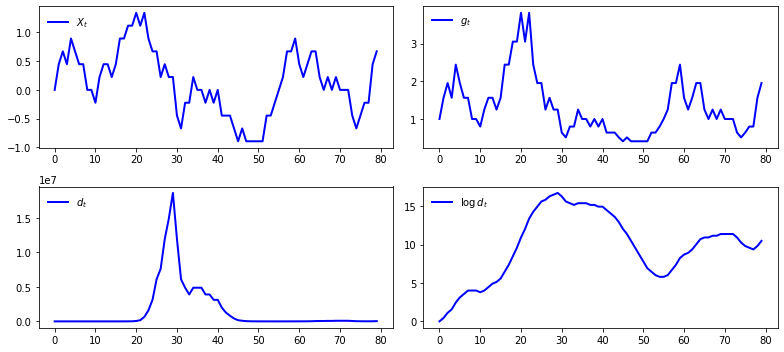
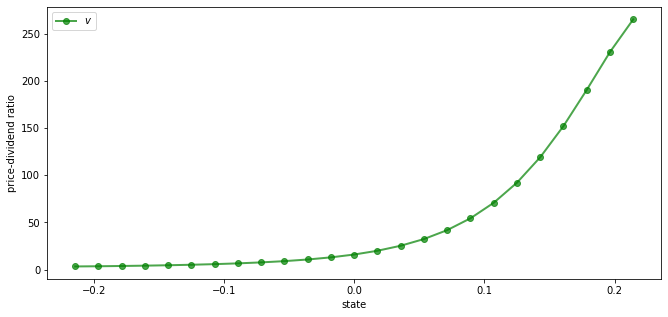
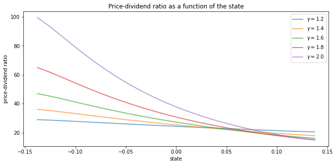
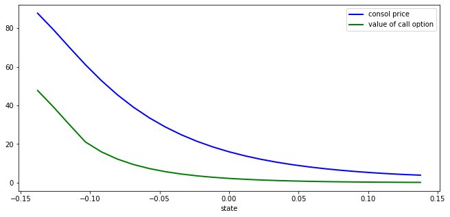
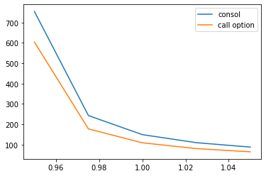
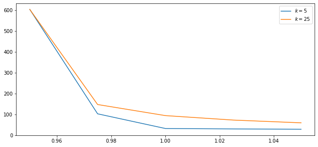

<!DOCTYPE html>

<html>
  <head>
    <meta charset="utf-8" />
    <meta name="viewport" content="width=device-width, initial-scale=1.0" /><meta name="generator" content="Docutils 0.17.1: http://docutils.sourceforge.net/" />

    <title>65. Asset Pricing: Finite State Models &#8212; Quantitative Economics with Python</title>
    <script src="https://unpkg.com/@popperjs/core@2.9.2/dist/umd/popper.min.js"></script>
    <script src="https://unpkg.com/tippy.js@6.3.1/dist/tippy-bundle.umd.js"></script>
    <script src="https://cdn.jsdelivr.net/npm/feather-icons/dist/feather.min.js"></script>
    
        <script>
            MathJax = {
            loader: {load: ['[tex]/boldsymbol', '[tex]/textmacros']},
            tex: {
                packages: {'[+]': ['boldsymbol', 'textmacros']},
                inlineMath: [['$', '$'], ['\\(', '\\)']],
                processEscapes: true,
                macros: {
                    "argmax" : "arg\\,max",
                    "argmin" : "arg\\,min",
                    "col"    : "col",
                    "Span"   :  "span",
                    "epsilon": "\\varepsilon",
                    "EE": "\\mathbb{E}",
                    "PP": "\\mathbb{P}",
                    "RR": "\\mathbb{R}",
                    "NN": "\\mathbb{N}",
                    "ZZ": "\\mathbb{Z}",
                    "aA": "\\mathcal{A}",
                    "bB": "\\mathcal{B}",
                    "cC": "\\mathcal{C}",
                    "dD": "\\mathcal{D}",
                    "eE": "\\mathcal{E}",
                    "fF": "\\mathcal{F}",
                    "gG": "\\mathcal{G}",
                    "hH": "\\mathcal{H}",
                }
            },
            svg: {
                fontCache: 'global',
                scale: 0.92,
                displayAlign: "center",
            },
            };
        </script>
    
    
    
  <link href="_static/css/theme.css" rel="stylesheet">
  <link href="_static/css/index.ff1ffe594081f20da1ef19478df9384b.css" rel="stylesheet">

    
  <link rel="stylesheet"
    href="_static/vendor/fontawesome/5.13.0/css/all.min.css">
  <link rel="preload" as="font" type="font/woff2" crossorigin
    href="_static/vendor/fontawesome/5.13.0/webfonts/fa-solid-900.woff2">
  <link rel="preload" as="font" type="font/woff2" crossorigin
    href="_static/vendor/fontawesome/5.13.0/webfonts/fa-brands-400.woff2">

    
      

    
    <link rel="stylesheet" type="text/css" href="_static/pygments.css" />
    <link rel="stylesheet" type="text/css" href="_static/quantecon-book-theme.1ef59f8f4e91ec8319176e8479c6af4e.css" />
    <link rel="stylesheet" type="text/css" href="_static/togglebutton.css" />
    <link rel="stylesheet" type="text/css" href="_static/copybutton.css" />
    <link rel="stylesheet" type="text/css" href="_static/mystnb.css" />
    <link rel="stylesheet" type="text/css" href="_static/sphinx-thebe.css" />
    <link rel="stylesheet" type="text/css" href="_static/panels-main.c949a650a448cc0ae9fd3441c0e17fb0.css" />
    <link rel="stylesheet" type="text/css" href="_static/panels-variables.06eb56fa6e07937060861dad626602ad.css" />
    
  <link rel="preload" as="script" href="_static/js/index.be7d3bbb2ef33a8344ce.js">


    <script data-url_root="./" id="documentation_options" src="_static/documentation_options.js"></script>
    <script src="_static/jquery.js"></script>
    <script src="_static/underscore.js"></script>
    <script src="_static/doctools.js"></script>
    <script src="_static/clipboard.min.js"></script>
    <script src="_static/copybutton.js"></script>
    <script>let toggleHintShow = 'Click to show';</script>
    <script>let toggleHintHide = 'Click to hide';</script>
    <script>let toggleOpenOnPrint = 'true';</script>
    <script src="_static/togglebutton.js"></script>
    <script>var togglebuttonSelector = '.toggle, .admonition.dropdown, .tag_hide_input div.cell_input, .tag_hide-input div.cell_input, .tag_hide_output div.cell_output, .tag_hide-output div.cell_output, .tag_hide_cell.cell, .tag_hide-cell.cell';</script>
    <script src="_static/sphinx-book-theme.d59cb220de22ca1c485ebbdc042f0030.js"></script>
    <script src="_static/quantecon-book-theme.15b0c36fffe88f468997fa7b698991d3.js"></script>
    <script async="async" src="https://cdn.jsdelivr.net/npm/mathjax@3/es5/tex-mml-svg.js"></script>
    <script>window.MathJax = {"tex": {"macros": {"argmax": "arg\\,max", "argmin": "arg\\,min"}}, "options": {"processHtmlClass": "tex2jax_process|mathjax_process|math|output_area"}}</script>
    <script async="async" src="https://unpkg.com/thebe@0.5.1/lib/index.js"></script>
    <script>
        const thebe_selector = ".thebe"
        const thebe_selector_input = "pre"
        const thebe_selector_output = ".output"
    </script>
    <script async="async" src="_static/sphinx-thebe.js"></script>
    <link rel="canonical" href="https://python.quantecon.org/markov_asset.html" />
    <link rel="shortcut icon" href="_static/lectures-favicon.ico"/>
    <link rel="index" title="Index" href="genindex.html" />
    <link rel="search" title="Search" href="search.html" />
    <link rel="next" title="66. Competitive Equilibria with Arrow Securities" href="ge_arrow.html" />
    <link rel="prev" title="64. The Aiyagari Model" href="aiyagari.html" />

<!-- Normal Meta Tags -->
<meta name="author" context="Thomas J. Sargent &amp; John Stachurski" />
<meta name="keywords" content="Python, QuantEcon, Quantitative Economics, Economics, Sloan, Alfred P. Sloan Foundation, Tom J. Sargent, John Stachurski" />
<meta name="description" content=This website presents a set of lectures on quantitative economic modeling, designed and written by Thomas J. Sargent and John Stachurski. />

<!-- Twitter tags -->
<meta name="twitter:card" content="summary" />
<meta name="twitter:site" content="@quantecon" />
<meta name="twitter:title" content="Asset Pricing: Finite State Models"/>
<meta name="twitter:description" content="This website presents a set of lectures on quantitative economic modeling, designed and written by Thomas J. Sargent and John Stachurski.">
<meta name="twitter:creator" content="@quantecon">
<meta name="twitter:image" content="https://assets.quantecon.org/img/qe-twitter-logo.png">

<!-- Opengraph tags -->
<meta property="og:title" content="Asset Pricing: Finite State Models" />
<meta property="og:type" content="website" />
<meta property="og:url" content="https://python.quantecon.org/markov_asset.html" />
<meta property="og:image" content="https://assets.quantecon.org/img/qe-og-logo.png" />
<meta property="og:description" content="This website presents a set of lectures on quantitative economic modeling, designed and written by Thomas J. Sargent and John Stachurski." />
<meta property="og:site_name" content="Quantitative Economics with Python" />
<meta name="theme-color" content="#ffffff" />

  </head>
<body>


    <span id="top"></span>

    <div class="qe-wrapper">

        <div class="qe-main">

            <div class="qe-page" id=markov_asset>

                <div class="qe-page__toc">

                    <div class="inner">

                        
                        <div class="qe-page__toc-header">
                            On this page
                        </div>


                        <nav id="bd-toc-nav" class="qe-page__toc-nav">
                            <ul class="visible nav section-nav flex-column">
 <li class="toc-h2 nav-item toc-entry">
  <a class="reference internal nav-link" href="#overview">
   65.1. Overview
  </a>
 </li>
 <li class="toc-h2 nav-item toc-entry">
  <a class="reference internal nav-link" href="#pricing-models">
   65.2. Pricing Models
  </a>
  <ul class="nav section-nav flex-column">
   <li class="toc-h3 nav-item toc-entry">
    <a class="reference internal nav-link" href="#risk-neutral-pricing">
     65.2.1. Risk-Neutral Pricing
    </a>
   </li>
   <li class="toc-h3 nav-item toc-entry">
    <a class="reference internal nav-link" href="#pricing-with-random-discount-factor">
     65.2.2. Pricing with Random Discount Factor
    </a>
   </li>
   <li class="toc-h3 nav-item toc-entry">
    <a class="reference internal nav-link" href="#asset-pricing-and-covariances">
     65.2.3. Asset Pricing and Covariances
    </a>
   </li>
   <li class="toc-h3 nav-item toc-entry">
    <a class="reference internal nav-link" href="#the-price-dividend-ratio">
     65.2.4. The Price-Dividend Ratio
    </a>
   </li>
  </ul>
 </li>
 <li class="toc-h2 nav-item toc-entry">
  <a class="reference internal nav-link" href="#prices-in-the-risk-neutral-case">
   65.3. Prices in the Risk-Neutral Case
  </a>
  <ul class="nav section-nav flex-column">
   <li class="toc-h3 nav-item toc-entry">
    <a class="reference internal nav-link" href="#example-1-constant-dividends">
     65.3.1. Example 1: Constant Dividends
    </a>
   </li>
   <li class="toc-h3 nav-item toc-entry">
    <a class="reference internal nav-link" href="#example-2-dividends-with-deterministic-growth-paths">
     65.3.2. Example 2: Dividends with Deterministic Growth Paths
    </a>
   </li>
   <li class="toc-h3 nav-item toc-entry">
    <a class="reference internal nav-link" href="#example-3-markov-growth-risk-neutral-pricing">
     65.3.3. Example 3: Markov Growth, Risk-Neutral Pricing
    </a>
    <ul class="nav section-nav flex-column">
     <li class="toc-h4 nav-item toc-entry">
      <a class="reference internal nav-link" href="#pricing-formula">
       65.3.3.1. Pricing Formula
      </a>
     </li>
    </ul>
   </li>
   <li class="toc-h3 nav-item toc-entry">
    <a class="reference internal nav-link" href="#code">
     65.3.4. Code
    </a>
   </li>
  </ul>
 </li>
 <li class="toc-h2 nav-item toc-entry">
  <a class="reference internal nav-link" href="#risk-aversion-and-asset-prices">
   65.4. Risk Aversion and Asset Prices
  </a>
  <ul class="nav section-nav flex-column">
   <li class="toc-h3 nav-item toc-entry">
    <a class="reference internal nav-link" href="#pricing-a-lucas-tree">
     65.4.1. Pricing a Lucas Tree
    </a>
    <ul class="nav section-nav flex-column">
     <li class="toc-h4 nav-item toc-entry">
      <a class="reference internal nav-link" href="#special-cases">
       65.4.1.1. Special Cases
      </a>
     </li>
    </ul>
   </li>
   <li class="toc-h3 nav-item toc-entry">
    <a class="reference internal nav-link" href="#a-risk-free-consol">
     65.4.2. A Risk-Free Consol
    </a>
   </li>
   <li class="toc-h3 nav-item toc-entry">
    <a class="reference internal nav-link" href="#pricing-an-option-to-purchase-the-consol">
     65.4.3. Pricing an Option to Purchase the Consol
    </a>
    <ul class="nav section-nav flex-column">
     <li class="toc-h4 nav-item toc-entry">
      <a class="reference internal nav-link" href="#an-infinite-horizon-call-option">
       65.4.3.1. An Infinite Horizon Call Option
      </a>
     </li>
    </ul>
   </li>
   <li class="toc-h3 nav-item toc-entry">
    <a class="reference internal nav-link" href="#risk-free-rates">
     65.4.4. Risk-Free Rates
    </a>
    <ul class="nav section-nav flex-column">
     <li class="toc-h4 nav-item toc-entry">
      <a class="reference internal nav-link" href="#the-one-period-risk-free-interest-rate">
       65.4.4.1. The One-period Risk-free Interest Rate
      </a>
     </li>
     <li class="toc-h4 nav-item toc-entry">
      <a class="reference internal nav-link" href="#other-terms">
       65.4.4.2. Other Terms
      </a>
     </li>
    </ul>
   </li>
  </ul>
 </li>
 <li class="toc-h2 nav-item toc-entry">
  <a class="reference internal nav-link" href="#exercises">
   65.5. Exercises
  </a>
  <ul class="nav section-nav flex-column">
   <li class="toc-h3 nav-item toc-entry">
    <a class="reference internal nav-link" href="#exercise-1">
     65.5.1. Exercise 1
    </a>
   </li>
   <li class="toc-h3 nav-item toc-entry">
    <a class="reference internal nav-link" href="#exercise-2">
     65.5.2. Exercise 2
    </a>
   </li>
   <li class="toc-h3 nav-item toc-entry">
    <a class="reference internal nav-link" href="#exercise-3">
     65.5.3. Exercise 3
    </a>
   </li>
  </ul>
 </li>
 <li class="toc-h2 nav-item toc-entry">
  <a class="reference internal nav-link" href="#solutions">
   65.6. Solutions
  </a>
  <ul class="nav section-nav flex-column">
   <li class="toc-h3 nav-item toc-entry">
    <a class="reference internal nav-link" href="#id6">
     65.6.1. Exercise 1
    </a>
   </li>
   <li class="toc-h3 nav-item toc-entry">
    <a class="reference internal nav-link" href="#id7">
     65.6.2. Exercise 2
    </a>
   </li>
   <li class="toc-h3 nav-item toc-entry">
    <a class="reference internal nav-link" href="#id8">
     65.6.3. Exercise 3
    </a>
   </li>
  </ul>
 </li>
</ul>

                            <p class="logo">
                                
                                    
                                    <a href=https://quantecon.org></a>
                                    
                                
                            </p>

                            <p class="powered">Powered by <a href="https://jupyterbook.org/">Jupyter Book</a></p>

                        </nav>

                        <div class="qe-page__toc-footer">
                            
                            
                            <p><a href="#top"><strong>Back to top</strong></a></p>
                        </div>

                    </div>

                </div>

                <div class="qe-page__header">

                    <div class="qe-page__header-copy">

                        <p class="qe-page__header-heading"><a href="intro.html">Quantitative Economics with Python</a></p>

                        <p class="qe-page__header-subheading">Asset Pricing: Finite State Models</p>

                    </div>

                    <p class="qe-page__header-authors">Thomas J. Sargent & John Stachurski</p>

                </div> <!-- .page__header -->


                
                <main class="qe-page__content" role="main">
                    
                    <div>
                        
  <div id="qe-notebook-header" align="right" style="text-align:right;">
        <a href="https://quantecon.org/" title="quantecon.org">
                
        </a>
</div><section class="tex2jax_ignore mathjax_ignore" id="asset-pricing-finite-state-models">
<h1><a class="toc-backref" href="#id9"><span class="section-number">65. </span><span class="target" id="index-0"></span>Asset Pricing: Finite State Models</a><a class="headerlink" href="#asset-pricing-finite-state-models" title="Permalink to this headline">¶</a></h1>
<div class="contents topic" id="contents">
<span id="index-1"></span><p class="topic-title">Contents</p>
<ul class="simple">
<li><p><a class="reference internal" href="#asset-pricing-finite-state-models" id="id9">Asset Pricing: Finite State Models</a></p>
<ul>
<li><p><a class="reference internal" href="#overview" id="id10">Overview</a></p></li>
<li><p><a class="reference internal" href="#pricing-models" id="id11">Pricing Models</a></p></li>
<li><p><a class="reference internal" href="#prices-in-the-risk-neutral-case" id="id12">Prices in the Risk-Neutral Case</a></p></li>
<li><p><a class="reference internal" href="#risk-aversion-and-asset-prices" id="id13">Risk Aversion and Asset Prices</a></p></li>
<li><p><a class="reference internal" href="#exercises" id="id14">Exercises</a></p></li>
<li><p><a class="reference internal" href="#solutions" id="id15">Solutions</a></p></li>
</ul>
</li>
</ul>
</div>
<blockquote class="epigraph">
<div><p>“A little knowledge of geometric series goes a long way” – Robert E. Lucas, Jr.</p>
</div></blockquote>
<blockquote class="epigraph">
<div><p>“Asset pricing is all about covariances” – Lars Peter Hansen</p>
</div></blockquote>
<p>In addition to what’s in Anaconda, this lecture will need the following libraries:</p>
<div class="cell tag_hide-output docutils container">
<div class="cell_input docutils container">
<div class="highlight-ipython3 notranslate"><div class="highlight"><pre><span></span><span class="o">!</span>conda install -y quantecon
</pre></div>
</div>
</div>
<div class="cell_output docutils container">
<div class="output stream highlight-myst-ansi notranslate"><div class="highlight"><pre><span></span>Collecting package metadata (current_repodata.json): - 
</pre></div>
</div>
<div class="output stream highlight-myst-ansi notranslate"><div class="highlight"><pre><span></span>\ 
</pre></div>
</div>
<div class="output stream highlight-myst-ansi notranslate"><div class="highlight"><pre><span></span>| 
</pre></div>
</div>
<div class="output stream highlight-myst-ansi notranslate"><div class="highlight"><pre><span></span>/ 
</pre></div>
</div>
<div class="output stream highlight-myst-ansi notranslate"><div class="highlight"><pre><span></span>- 
</pre></div>
</div>
<div class="output stream highlight-myst-ansi notranslate"><div class="highlight"><pre><span></span>\ 
</pre></div>
</div>
<div class="output stream highlight-myst-ansi notranslate"><div class="highlight"><pre><span></span>| 
</pre></div>
</div>
<div class="output stream highlight-myst-ansi notranslate"><div class="highlight"><pre><span></span>/ 
</pre></div>
</div>
<div class="output stream highlight-myst-ansi notranslate"><div class="highlight"><pre><span></span>- 
</pre></div>
</div>
<div class="output stream highlight-myst-ansi notranslate"><div class="highlight"><pre><span></span>\ 
</pre></div>
</div>
<div class="output stream highlight-myst-ansi notranslate"><div class="highlight"><pre><span></span>| 
</pre></div>
</div>
<div class="output stream highlight-myst-ansi notranslate"><div class="highlight"><pre><span></span>/ 
</pre></div>
</div>
<div class="output stream highlight-myst-ansi notranslate"><div class="highlight"><pre><span></span>- 
</pre></div>
</div>
<div class="output stream highlight-myst-ansi notranslate"><div class="highlight"><pre><span></span>\ 
</pre></div>
</div>
<div class="output stream highlight-myst-ansi notranslate"><div class="highlight"><pre><span></span>done
Solving environment: / 
</pre></div>
</div>
<div class="output stream highlight-myst-ansi notranslate"><div class="highlight"><pre><span></span>- 
</pre></div>
</div>
<div class="output stream highlight-myst-ansi notranslate"><div class="highlight"><pre><span></span>\ 
</pre></div>
</div>
<div class="output stream highlight-myst-ansi notranslate"><div class="highlight"><pre><span></span>| 
</pre></div>
</div>
<div class="output stream highlight-myst-ansi notranslate"><div class="highlight"><pre><span></span>/ 
</pre></div>
</div>
<div class="output stream highlight-myst-ansi notranslate"><div class="highlight"><pre><span></span>- 
</pre></div>
</div>
<div class="output stream highlight-myst-ansi notranslate"><div class="highlight"><pre><span></span>\ 
</pre></div>
</div>
<div class="output stream highlight-myst-ansi notranslate"><div class="highlight"><pre><span></span>| 
</pre></div>
</div>
<div class="output stream highlight-myst-ansi notranslate"><div class="highlight"><pre><span></span>/ 
</pre></div>
</div>
<div class="output stream highlight-myst-ansi notranslate"><div class="highlight"><pre><span></span>- 
</pre></div>
</div>
<div class="output stream highlight-myst-ansi notranslate"><div class="highlight"><pre><span></span>\ 
</pre></div>
</div>
<div class="output stream highlight-myst-ansi notranslate"><div class="highlight"><pre><span></span>| 
</pre></div>
</div>
<div class="output stream highlight-myst-ansi notranslate"><div class="highlight"><pre><span></span>/ 
</pre></div>
</div>
<div class="output stream highlight-myst-ansi notranslate"><div class="highlight"><pre><span></span>- 
</pre></div>
</div>
<div class="output stream highlight-myst-ansi notranslate"><div class="highlight"><pre><span></span>\ 
</pre></div>
</div>
<div class="output stream highlight-myst-ansi notranslate"><div class="highlight"><pre><span></span>| 
</pre></div>
</div>
<div class="output stream highlight-myst-ansi notranslate"><div class="highlight"><pre><span></span>/ 
</pre></div>
</div>
<div class="output stream highlight-myst-ansi notranslate"><div class="highlight"><pre><span></span>- 
</pre></div>
</div>
<div class="output stream highlight-myst-ansi notranslate"><div class="highlight"><pre><span></span>\ 
</pre></div>
</div>
<div class="output stream highlight-myst-ansi notranslate"><div class="highlight"><pre><span></span>| 
</pre></div>
</div>
<div class="output stream highlight-myst-ansi notranslate"><div class="highlight"><pre><span></span>/ 
</pre></div>
</div>
<div class="output stream highlight-myst-ansi notranslate"><div class="highlight"><pre><span></span>- 
</pre></div>
</div>
<div class="output stream highlight-myst-ansi notranslate"><div class="highlight"><pre><span></span>\ 
</pre></div>
</div>
<div class="output stream highlight-myst-ansi notranslate"><div class="highlight"><pre><span></span>| 
</pre></div>
</div>
<div class="output stream highlight-myst-ansi notranslate"><div class="highlight"><pre><span></span>/ 
</pre></div>
</div>
<div class="output stream highlight-myst-ansi notranslate"><div class="highlight"><pre><span></span>- 
</pre></div>
</div>
<div class="output stream highlight-myst-ansi notranslate"><div class="highlight"><pre><span></span>\ 
</pre></div>
</div>
<div class="output stream highlight-myst-ansi notranslate"><div class="highlight"><pre><span></span>| 
</pre></div>
</div>
<div class="output stream highlight-myst-ansi notranslate"><div class="highlight"><pre><span></span>done
</pre></div>
</div>
<div class="output stream highlight-myst-ansi notranslate"><div class="highlight"><pre><span></span># All requested packages already installed.
</pre></div>
</div>
</div>
</div>
<section id="overview">
<h2><a class="toc-backref" href="#id10"><span class="section-number">65.1. </span>Overview</a><a class="headerlink" href="#overview" title="Permalink to this headline">¶</a></h2>
<p id="index-2">An asset is a claim on one or more future payoffs.</p>
<p>The spot price of an asset depends primarily on</p>
<ul class="simple">
<li><p>the anticipated  income stream</p></li>
<li><p>attitudes about risk</p></li>
<li><p>rates of time preference</p></li>
</ul>
<p>In this lecture, we consider some standard pricing models and dividend stream specifications.</p>
<p>We study how prices and dividend-price ratios respond in these different scenarios.</p>
<p>We also look at creating and pricing <em>derivative</em> assets that repackage income streams.</p>
<p>Key tools for the lecture are</p>
<ul class="simple">
<li><p>Markov processses</p></li>
<li><p>formulas for predicting future values of functions of a Markov state</p></li>
<li><p>a formula for predicting the discounted sum of future values of a Markov state</p></li>
</ul>
<p>Let’s start with some imports:</p>
<div class="cell docutils container">
<div class="cell_input docutils container">
<div class="highlight-ipython3 notranslate"><div class="highlight"><pre><span></span><span class="o">%</span><span class="k">matplotlib</span> inline
<span class="kn">import</span> <span class="nn">matplotlib.pyplot</span> <span class="k">as</span> <span class="nn">plt</span>
<span class="n">plt</span><span class="o">.</span><span class="n">rcParams</span><span class="p">[</span><span class="s2">&quot;figure.figsize&quot;</span><span class="p">]</span> <span class="o">=</span> <span class="p">(</span><span class="mi">11</span><span class="p">,</span> <span class="mi">5</span><span class="p">)</span>  <span class="c1">#set default figure size</span>
<span class="kn">import</span> <span class="nn">numpy</span> <span class="k">as</span> <span class="nn">np</span>
<span class="kn">import</span> <span class="nn">quantecon</span> <span class="k">as</span> <span class="nn">qe</span>
<span class="kn">from</span> <span class="nn">numpy.linalg</span> <span class="kn">import</span> <span class="n">eigvals</span><span class="p">,</span> <span class="n">solve</span>
</pre></div>
</div>
</div>
</div>
</section>
<section id="pricing-models">
<h2><a class="toc-backref" href="#id11"><span class="section-number">65.2. </span><span class="target" id="index-3"></span>Pricing Models</a><a class="headerlink" href="#pricing-models" title="Permalink to this headline">¶</a></h2>
<p id="index-4">Let <span class="math notranslate nohighlight">\(\{d_t\}_{t \geq 0}\)</span> be a stream of dividends</p>
<ul class="simple">
<li><p>A time-<span class="math notranslate nohighlight">\(t\)</span> <strong>cum-dividend</strong> asset is a claim to the stream <span class="math notranslate nohighlight">\(d_t, d_{t+1}, \ldots\)</span>.</p></li>
<li><p>A time-<span class="math notranslate nohighlight">\(t\)</span> <strong>ex-dividend</strong> asset is a claim to the stream <span class="math notranslate nohighlight">\(d_{t+1}, d_{t+2}, \ldots\)</span>.</p></li>
</ul>
<p>Let’s look at some equations that we expect to hold for prices of assets under ex-dividend contracts
(we will consider cum-dividend pricing in the exercises).</p>
<section id="risk-neutral-pricing">
<h3><span class="section-number">65.2.1. </span>Risk-Neutral Pricing<a class="headerlink" href="#risk-neutral-pricing" title="Permalink to this headline">¶</a></h3>
<p id="index-5">Our first scenario is risk-neutral pricing.</p>
<p>Let <span class="math notranslate nohighlight">\(\beta = 1/(1+\rho)\)</span> be an intertemporal discount <strong>factor</strong>, where
<span class="math notranslate nohighlight">\(\rho\)</span> is the <strong>rate</strong> at which agents discount the future.</p>
<p>The basic risk-neutral asset pricing equation for pricing one unit of an ex-dividend asset is</p>
<div class="math notranslate nohighlight" id="equation-rnapex">
<span id="mass-pra"></span><span class="eqno">(65.1)<a class="headerlink" href="#equation-rnapex" title="Permalink to this equation">¶</a></span>\[p_t = \beta {\mathbb E}_t [d_{t+1} + p_{t+1}]\]</div>
<p>This is a simple “cost equals expected benefit” relationship.</p>
<p>Here <span class="math notranslate nohighlight">\({\mathbb E}_t [y]\)</span> denotes the best forecast of <span class="math notranslate nohighlight">\(y\)</span>, conditioned on information available at time <span class="math notranslate nohighlight">\(t\)</span>.</p>
<p>More precisely, <span class="math notranslate nohighlight">\({\mathbb E}_t [y]\)</span> is the mathematical expectation of <span class="math notranslate nohighlight">\(y\)</span> conditional on information available at time <span class="math notranslate nohighlight">\(t\)</span>.</p>
</section>
<section id="pricing-with-random-discount-factor">
<h3><span class="section-number">65.2.2. </span>Pricing with Random Discount Factor<a class="headerlink" href="#pricing-with-random-discount-factor" title="Permalink to this headline">¶</a></h3>
<p id="index-6">What happens if for some reason traders discount payouts differently depending on the state of the world?</p>
<p>Michael Harrison and David Kreps <span id="id1">[<a class="reference internal" href="zreferences.html#id109">HK79</a>]</span> and Lars Peter Hansen
and Scott Richard <span id="id2">[<a class="reference internal" href="zreferences.html#id110">HR87</a>]</span> showed that in quite general
settings the price of an ex-dividend asset obeys</p>
<div class="math notranslate nohighlight" id="equation-lteeqs0">
<span class="eqno">(65.2)<a class="headerlink" href="#equation-lteeqs0" title="Permalink to this equation">¶</a></span>\[p_t = {\mathbb E}_t \left[ m_{t+1}  ( d_{t+1} + p_{t+1} ) \right]\]</div>
<p>for some  <strong>stochastic discount factor</strong> <span class="math notranslate nohighlight">\(m_{t+1}\)</span>.</p>
<p>Here the fixed discount factor <span class="math notranslate nohighlight">\(\beta\)</span> in <a class="reference internal" href="#equation-rnapex">(65.1)</a> has been replaced by the random variable <span class="math notranslate nohighlight">\(m_{t+1}\)</span>.</p>
<p>How anticipated future payoffs are evaluated  now depends on statistical properties of <span class="math notranslate nohighlight">\(m_{t+1}\)</span>.</p>
<p>The stochastic discount factor can be specified to capture the idea that assets that tend to have good payoffs in bad states of the world are valued more highly than other assets whose payoffs don’t behave that way.</p>
<p>This is because such assets pay well when funds are more urgently wanted.</p>
<p>We give examples of how the stochastic discount factor has been modeled below.</p>
</section>
<section id="asset-pricing-and-covariances">
<h3><span class="section-number">65.2.3. </span>Asset Pricing and Covariances<a class="headerlink" href="#asset-pricing-and-covariances" title="Permalink to this headline">¶</a></h3>
<p>Recall that, from the definition of a conditional covariance <span class="math notranslate nohighlight">\({\rm cov}_t (x_{t+1}, y_{t+1})\)</span>, we have</p>
<div class="math notranslate nohighlight" id="equation-lteeqs101">
<span class="eqno">(65.3)<a class="headerlink" href="#equation-lteeqs101" title="Permalink to this equation">¶</a></span>\[{\mathbb E}_t (x_{t+1} y_{t+1}) = {\rm cov}_t (x_{t+1}, y_{t+1}) + {\mathbb E}_t x_{t+1} {\mathbb E}_t y_{t+1}\]</div>
<p>If we apply this definition to the asset pricing equation <a class="reference internal" href="#equation-lteeqs0">(65.2)</a> we obtain</p>
<div class="math notranslate nohighlight" id="equation-lteeqs102">
<span class="eqno">(65.4)<a class="headerlink" href="#equation-lteeqs102" title="Permalink to this equation">¶</a></span>\[p_t = {\mathbb E}_t m_{t+1} {\mathbb E}_t (d_{t+1} + p_{t+1}) + {\rm cov}_t (m_{t+1}, d_{t+1}+ p_{t+1})\]</div>
<p>It is useful to regard equation <a class="reference internal" href="#equation-lteeqs102">(65.4)</a>   as a generalization of equation <a class="reference internal" href="#equation-rnapex">(65.1)</a></p>
<ul class="simple">
<li><p>In equation <a class="reference internal" href="#equation-rnapex">(65.1)</a>, the stochastic discount factor <span class="math notranslate nohighlight">\(m_{t+1} = \beta\)</span>,  a constant.</p></li>
<li><p>In equation <a class="reference internal" href="#equation-rnapex">(65.1)</a>, the covariance term <span class="math notranslate nohighlight">\({\rm cov}_t (m_{t+1}, d_{t+1}+ p_{t+1})\)</span> is zero because <span class="math notranslate nohighlight">\(m_{t+1} = \beta\)</span>.</p></li>
<li><p>In equation <a class="reference internal" href="#equation-rnapex">(65.1)</a>, <span class="math notranslate nohighlight">\({\mathbb E}_t m_{t+1}\)</span> can be interpreted as the reciprocal of the one-period risk-free gross interest rate.</p></li>
<li><p>When  <span class="math notranslate nohighlight">\(m_{t+1}\)</span>  covaries more negatively with the payout <span class="math notranslate nohighlight">\(p_{t+1} + d_{t+1}\)</span>, the price of the asset is lower.</p></li>
</ul>
<p>Equation <a class="reference internal" href="#equation-lteeqs102">(65.4)</a> asserts that the covariance of the stochastic discount factor with the one period payout <span class="math notranslate nohighlight">\(d_{t+1} + p_{t+1}\)</span> is an important determinant of the price <span class="math notranslate nohighlight">\(p_t\)</span>.</p>
<p>We give examples of some models of stochastic discount factors that have been proposed later in this lecture and also in a <a class="reference external" href="https://python-advanced.quantecon.org/lucas_model.html">later lecture</a>.</p>
</section>
<section id="the-price-dividend-ratio">
<h3><span class="section-number">65.2.4. </span>The Price-Dividend Ratio<a class="headerlink" href="#the-price-dividend-ratio" title="Permalink to this headline">¶</a></h3>
<p>Aside from prices, another quantity of interest is the <strong>price-dividend ratio</strong> <span class="math notranslate nohighlight">\(v_t := p_t / d_t\)</span>.</p>
<p>Let’s write down an expression that this ratio should satisfy.</p>
<p>We can divide both sides of <a class="reference internal" href="#equation-lteeqs0">(65.2)</a> by <span class="math notranslate nohighlight">\(d_t\)</span> to get</p>
<div class="math notranslate nohighlight" id="equation-pdex">
<span class="eqno">(65.5)<a class="headerlink" href="#equation-pdex" title="Permalink to this equation">¶</a></span>\[v_t = {\mathbb E}_t \left[ m_{t+1} \frac{d_{t+1}}{d_t} (1 + v_{t+1}) \right]\]</div>
<p>Below we’ll discuss the implication of this equation.</p>
</section>
</section>
<section id="prices-in-the-risk-neutral-case">
<h2><a class="toc-backref" href="#id12"><span class="section-number">65.3. </span>Prices in the Risk-Neutral Case</a><a class="headerlink" href="#prices-in-the-risk-neutral-case" title="Permalink to this headline">¶</a></h2>
<p>What can we say about price dynamics on the basis of the models described above?</p>
<p>The answer to this question depends on</p>
<ol class="simple">
<li><p>the process we specify for dividends</p></li>
<li><p>the stochastic discount factor and how it correlates with dividends</p></li>
</ol>
<p>For now we’ll study  the risk-neutral case in which  the stochastic discount factor is constant.</p>
<p>We’ll  focus on how an asset  price depends on a dividend process.</p>
<section id="example-1-constant-dividends">
<h3><span class="section-number">65.3.1. </span>Example 1: Constant Dividends<a class="headerlink" href="#example-1-constant-dividends" title="Permalink to this headline">¶</a></h3>
<p>The simplest case is risk-neutral price of a constant, non-random dividend stream <span class="math notranslate nohighlight">\(d_t = d &gt; 0\)</span>.</p>
<p>Removing the expectation from <a class="reference internal" href="#equation-rnapex">(65.1)</a> and iterating forward gives</p>
<div class="math notranslate nohighlight">
\[\begin{split}
\begin{aligned}
    p_t &amp; = \beta (d + p_{t+1})
        \\
        &amp; = \beta (d + \beta(d + p_{t+2}))
        \\
        &amp; \quad \vdots
        \\
        &amp; = \beta (d + \beta d + \beta^2 d +  \cdots + \beta^{k-2} d + \beta^{k-1} p_{t+k})
\end{aligned}
\end{split}\]</div>
<p>If <span class="math notranslate nohighlight">\(\lim_{k \rightarrow + \infty} \beta^{k-1} p_{t+k} = 0\)</span>, this sequence converges to</p>
<div class="math notranslate nohighlight" id="equation-ddet">
<span class="eqno">(65.6)<a class="headerlink" href="#equation-ddet" title="Permalink to this equation">¶</a></span>\[\bar p := \frac{\beta d}{1-\beta}\]</div>
<p>This is the equilibrium price in the constant dividend case.</p>
<p>Indeed, simple algebra shows that setting <span class="math notranslate nohighlight">\(p_t = \bar p\)</span> for all <span class="math notranslate nohighlight">\(t\)</span>
satisfies the difference equation <span class="math notranslate nohighlight">\(p_t = \beta (d + p_{t+1})\)</span>.</p>
</section>
<section id="example-2-dividends-with-deterministic-growth-paths">
<h3><span class="section-number">65.3.2. </span>Example 2: Dividends with Deterministic Growth Paths<a class="headerlink" href="#example-2-dividends-with-deterministic-growth-paths" title="Permalink to this headline">¶</a></h3>
<p>Consider a growing, non-random dividend process <span class="math notranslate nohighlight">\(d_{t+1} = g d_t\)</span>
where <span class="math notranslate nohighlight">\(0 &lt; g \beta &lt; 1\)</span>.</p>
<p>While prices are not usually constant when dividends grow over time, a price
dividend-ratio can be.</p>
<p>If we guess this, substituting <span class="math notranslate nohighlight">\(v_t = v\)</span> into <a class="reference internal" href="#equation-pdex">(65.5)</a> as well as our
other assumptions, we get <span class="math notranslate nohighlight">\(v = \beta g (1 + v)\)</span>.</p>
<p>Since <span class="math notranslate nohighlight">\(\beta g &lt; 1\)</span>, we have a unique positive solution:</p>
<div class="math notranslate nohighlight">
\[
v = \frac{\beta g}{1 - \beta g }
\]</div>
<p>The price is then</p>
<div class="math notranslate nohighlight">
\[
p_t = \frac{\beta g}{1 - \beta g } d_t
\]</div>
<p>If, in this example, we take <span class="math notranslate nohighlight">\(g = 1+\kappa\)</span> and let
<span class="math notranslate nohighlight">\(\rho := 1/\beta - 1\)</span>, then the price becomes</p>
<div class="math notranslate nohighlight">
\[
p_t = \frac{1 + \kappa}{ \rho - \kappa} d_t
\]</div>
<p>This is called the <em>Gordon formula</em>.</p>
</section>
<section id="example-3-markov-growth-risk-neutral-pricing">
<span id="mass-mg"></span><h3><span class="section-number">65.3.3. </span>Example 3: Markov Growth, Risk-Neutral Pricing<a class="headerlink" href="#example-3-markov-growth-risk-neutral-pricing" title="Permalink to this headline">¶</a></h3>
<p>Next, we consider a dividend process</p>
<div class="math notranslate nohighlight" id="equation-mass-fmce">
<span class="eqno">(65.7)<a class="headerlink" href="#equation-mass-fmce" title="Permalink to this equation">¶</a></span>\[d_{t+1} = g_{t+1} d_t\]</div>
<p>The stochastic growth factor <span class="math notranslate nohighlight">\(\{g_t\}\)</span> is given by</p>
<div class="math notranslate nohighlight">
\[
g_t = g(X_t), \quad t = 1, 2, \ldots
\]</div>
<p>where</p>
<ol>
<li><p><span class="math notranslate nohighlight">\(\{X_t\}\)</span> is a finite Markov chain with state space <span class="math notranslate nohighlight">\(S\)</span> and
transition probabilities</p>
<div class="math notranslate nohighlight">
\[
   P(x, y) := \mathbb P \{ X_{t+1} = y \,|\, X_t = x \}
   \qquad (x, y \in S)
   \]</div>
</li>
<li><p><span class="math notranslate nohighlight">\(g\)</span> is a given function on <span class="math notranslate nohighlight">\(S\)</span> taking nonnegative values</p></li>
</ol>
<p>You can think of</p>
<ul class="simple">
<li><p><span class="math notranslate nohighlight">\(S\)</span> as <span class="math notranslate nohighlight">\(n\)</span> possible “states of the world” and <span class="math notranslate nohighlight">\(X_t\)</span> as the
current state.</p></li>
<li><p><span class="math notranslate nohighlight">\(g\)</span> as a function that maps a given state <span class="math notranslate nohighlight">\(X_t\)</span> into a growth of dividends
factor <span class="math notranslate nohighlight">\(g_t = g(X_t)\)</span>.</p></li>
<li><p><span class="math notranslate nohighlight">\(\ln g_t = \ln (d_{t+1} / d_t)\)</span> is the growth rate of dividends.</p></li>
</ul>
<p>(For a refresher on notation and theory for finite Markov chains see <a class="reference internal" href="finite_markov.html"><span class="doc">this lecture</span></a>)</p>
<p>The next figure shows a simulation, where</p>
<ul class="simple">
<li><p><span class="math notranslate nohighlight">\(\{X_t\}\)</span> evolves as a discretized AR1 process produced using <a class="reference internal" href="finite_markov.html#mc-ex3"><span class="std std-ref">Tauchen’s method</span></a>.</p></li>
<li><p><span class="math notranslate nohighlight">\(g_t = \exp(X_t)\)</span>, so that <span class="math notranslate nohighlight">\(\ln g_t = X_t\)</span> is the growth rate.</p></li>
</ul>
<div class="cell docutils container">
<div class="cell_input docutils container">
<div class="highlight-ipython3 notranslate"><div class="highlight"><pre><span></span><span class="n">mc</span> <span class="o">=</span> <span class="n">qe</span><span class="o">.</span><span class="n">tauchen</span><span class="p">(</span><span class="mf">0.96</span><span class="p">,</span> <span class="mf">0.25</span><span class="p">,</span> <span class="n">n</span><span class="o">=</span><span class="mi">25</span><span class="p">)</span>
<span class="n">sim_length</span> <span class="o">=</span> <span class="mi">80</span>

<span class="n">x_series</span> <span class="o">=</span> <span class="n">mc</span><span class="o">.</span><span class="n">simulate</span><span class="p">(</span><span class="n">sim_length</span><span class="p">,</span> <span class="n">init</span><span class="o">=</span><span class="n">np</span><span class="o">.</span><span class="n">median</span><span class="p">(</span><span class="n">mc</span><span class="o">.</span><span class="n">state_values</span><span class="p">))</span>
<span class="n">g_series</span> <span class="o">=</span> <span class="n">np</span><span class="o">.</span><span class="n">exp</span><span class="p">(</span><span class="n">x_series</span><span class="p">)</span>
<span class="n">d_series</span> <span class="o">=</span> <span class="n">np</span><span class="o">.</span><span class="n">cumprod</span><span class="p">(</span><span class="n">g_series</span><span class="p">)</span> <span class="c1"># Assumes d_0 = 1</span>

<span class="n">series</span> <span class="o">=</span> <span class="p">[</span><span class="n">x_series</span><span class="p">,</span> <span class="n">g_series</span><span class="p">,</span> <span class="n">d_series</span><span class="p">,</span> <span class="n">np</span><span class="o">.</span><span class="n">log</span><span class="p">(</span><span class="n">d_series</span><span class="p">)]</span>
<span class="n">labels</span> <span class="o">=</span> <span class="p">[</span><span class="s1">&#39;$X_t$&#39;</span><span class="p">,</span> <span class="s1">&#39;$g_t$&#39;</span><span class="p">,</span> <span class="s1">&#39;$d_t$&#39;</span><span class="p">,</span> <span class="sa">r</span><span class="s1">&#39;$\log \, d_t$&#39;</span><span class="p">]</span>

<span class="n">fig</span><span class="p">,</span> <span class="n">axes</span> <span class="o">=</span> <span class="n">plt</span><span class="o">.</span><span class="n">subplots</span><span class="p">(</span><span class="mi">2</span><span class="p">,</span> <span class="mi">2</span><span class="p">)</span>
<span class="k">for</span> <span class="n">ax</span><span class="p">,</span> <span class="n">s</span><span class="p">,</span> <span class="n">label</span> <span class="ow">in</span> <span class="nb">zip</span><span class="p">(</span><span class="n">axes</span><span class="o">.</span><span class="n">flatten</span><span class="p">(),</span> <span class="n">series</span><span class="p">,</span> <span class="n">labels</span><span class="p">):</span>
    <span class="n">ax</span><span class="o">.</span><span class="n">plot</span><span class="p">(</span><span class="n">s</span><span class="p">,</span> <span class="s1">&#39;b-&#39;</span><span class="p">,</span> <span class="n">lw</span><span class="o">=</span><span class="mi">2</span><span class="p">,</span> <span class="n">label</span><span class="o">=</span><span class="n">label</span><span class="p">)</span>
    <span class="n">ax</span><span class="o">.</span><span class="n">legend</span><span class="p">(</span><span class="n">loc</span><span class="o">=</span><span class="s1">&#39;upper left&#39;</span><span class="p">,</span> <span class="n">frameon</span><span class="o">=</span><span class="kc">False</span><span class="p">)</span>
<span class="n">plt</span><span class="o">.</span><span class="n">tight_layout</span><span class="p">()</span>
<span class="n">plt</span><span class="o">.</span><span class="n">show</span><span class="p">()</span>
</pre></div>
</div>
</div>
<div class="cell_output docutils container">

</div>
</div>
<section id="pricing-formula">
<h4><span class="section-number">65.3.3.1. </span>Pricing Formula<a class="headerlink" href="#pricing-formula" title="Permalink to this headline">¶</a></h4>
<p>To obtain asset prices in this setting, let’s adapt our analysis from the case of deterministic growth.</p>
<p>In that case, we found that <span class="math notranslate nohighlight">\(v\)</span> is constant.</p>
<p>This encourages us to guess that, in the current case, <span class="math notranslate nohighlight">\(v_t\)</span> is a fixed function of the state <span class="math notranslate nohighlight">\(X_t\)</span>.</p>
<p>We seek a function <span class="math notranslate nohighlight">\(v\)</span> such that the price-dividend ratio satisfies  <span class="math notranslate nohighlight">\(v_t = v(X_t)\)</span>.</p>
<p>We can substitute this guess into <a class="reference internal" href="#equation-pdex">(65.5)</a> to get</p>
<div class="math notranslate nohighlight">
\[
v(X_t) = \beta {\mathbb E}_t [ g(X_{t+1}) (1 + v(X_{t+1})) ]
\]</div>
<p>If we condition on <span class="math notranslate nohighlight">\(X_t = x\)</span>, this becomes</p>
<div class="math notranslate nohighlight">
\[
v(x) = \beta \sum_{y \in S}  g(y) (1 + v(y)) P(x, y)
\]</div>
<p>or</p>
<div class="math notranslate nohighlight" id="equation-pstack">
<span class="eqno">(65.8)<a class="headerlink" href="#equation-pstack" title="Permalink to this equation">¶</a></span>\[v(x) = \beta \sum_{y \in S}   K(x, y) (1 + v(y))
\quad \text{where} \quad
K(x, y) := g(y) P(x, y)\]</div>
<p>Suppose that there are <span class="math notranslate nohighlight">\(n\)</span> possible states <span class="math notranslate nohighlight">\(x_1, \ldots, x_n\)</span>.</p>
<p>We can then think of <a class="reference internal" href="#equation-pstack">(65.8)</a> as <span class="math notranslate nohighlight">\(n\)</span> stacked equations, one for each state, and write it in matrix form as</p>
<div class="math notranslate nohighlight" id="equation-vcumrn">
<span class="eqno">(65.9)<a class="headerlink" href="#equation-vcumrn" title="Permalink to this equation">¶</a></span>\[v = \beta K (\mathbb 1 + v)\]</div>
<p>Here</p>
<ul class="simple">
<li><p><span class="math notranslate nohighlight">\(v\)</span> is understood to be the column vector <span class="math notranslate nohighlight">\((v(x_1), \ldots, v(x_n))'\)</span>.</p></li>
<li><p><span class="math notranslate nohighlight">\(K\)</span> is the matrix <span class="math notranslate nohighlight">\((K(x_i, x_j))_{1 \leq i, j \leq n}\)</span>.</p></li>
<li><p><span class="math notranslate nohighlight">\({\mathbb 1}\)</span> is a column vector of ones.</p></li>
</ul>
<p>When does equation <a class="reference internal" href="#equation-vcumrn">(65.9)</a> have a unique solution?</p>
<p>From the <a class="reference internal" href="linear_algebra.html#la-neumann"><span class="std std-ref">Neumann series lemma</span></a> and Gelfand’s formula, equation <a class="reference internal" href="#equation-vcumrn">(65.9)</a> has a unique solution when <span class="math notranslate nohighlight">\(\beta K\)</span> has spectral radius strictly less than one.</p>
<p>Thus,  we require that the eigenvalues of <span class="math notranslate nohighlight">\(K\)</span>  be strictly less than <span class="math notranslate nohighlight">\(\beta^{-1}\)</span> in modulus.</p>
<p>The solution is then</p>
<div class="math notranslate nohighlight" id="equation-rned">
<span class="eqno">(65.10)<a class="headerlink" href="#equation-rned" title="Permalink to this equation">¶</a></span>\[v = (I - \beta K)^{-1} \beta K{\mathbb 1}\]</div>
</section>
</section>
<section id="code">
<h3><span class="section-number">65.3.4. </span>Code<a class="headerlink" href="#code" title="Permalink to this headline">¶</a></h3>
<p>Let’s calculate and plot the price-dividend ratio at some parameters.</p>
<p>As before, we’ll generate <span class="math notranslate nohighlight">\(\{X_t\}\)</span>  as a <a class="reference internal" href="finite_markov.html#mc-ex3"><span class="std std-ref">discretized AR1 process</span></a> and set <span class="math notranslate nohighlight">\(g_t = \exp(X_t)\)</span>.</p>
<p>Here’s the code, including a test of the spectral radius condition</p>
<div class="cell docutils container">
<div class="cell_input docutils container">
<div class="highlight-ipython3 notranslate"><div class="highlight"><pre><span></span><span class="n">n</span> <span class="o">=</span> <span class="mi">25</span>  <span class="c1"># Size of state space</span>
<span class="n">β</span> <span class="o">=</span> <span class="mf">0.9</span>
<span class="n">mc</span> <span class="o">=</span> <span class="n">qe</span><span class="o">.</span><span class="n">tauchen</span><span class="p">(</span><span class="mf">0.96</span><span class="p">,</span> <span class="mf">0.02</span><span class="p">,</span> <span class="n">n</span><span class="o">=</span><span class="n">n</span><span class="p">)</span>

<span class="n">K</span> <span class="o">=</span> <span class="n">mc</span><span class="o">.</span><span class="n">P</span> <span class="o">*</span> <span class="n">np</span><span class="o">.</span><span class="n">exp</span><span class="p">(</span><span class="n">mc</span><span class="o">.</span><span class="n">state_values</span><span class="p">)</span>

<span class="n">warning_message</span> <span class="o">=</span> <span class="s2">&quot;Spectral radius condition fails&quot;</span>
<span class="k">assert</span> <span class="n">np</span><span class="o">.</span><span class="n">max</span><span class="p">(</span><span class="n">np</span><span class="o">.</span><span class="n">abs</span><span class="p">(</span><span class="n">eigvals</span><span class="p">(</span><span class="n">K</span><span class="p">)))</span> <span class="o">&lt;</span> <span class="mi">1</span> <span class="o">/</span> <span class="n">β</span><span class="p">,</span>  <span class="n">warning_message</span>

<span class="n">I</span> <span class="o">=</span> <span class="n">np</span><span class="o">.</span><span class="n">identity</span><span class="p">(</span><span class="n">n</span><span class="p">)</span>
<span class="n">v</span> <span class="o">=</span> <span class="n">solve</span><span class="p">(</span><span class="n">I</span> <span class="o">-</span> <span class="n">β</span> <span class="o">*</span> <span class="n">K</span><span class="p">,</span> <span class="n">β</span> <span class="o">*</span> <span class="n">K</span> <span class="o">@</span> <span class="n">np</span><span class="o">.</span><span class="n">ones</span><span class="p">(</span><span class="n">n</span><span class="p">))</span>

<span class="n">fig</span><span class="p">,</span> <span class="n">ax</span> <span class="o">=</span> <span class="n">plt</span><span class="o">.</span><span class="n">subplots</span><span class="p">()</span>
<span class="n">ax</span><span class="o">.</span><span class="n">plot</span><span class="p">(</span><span class="n">mc</span><span class="o">.</span><span class="n">state_values</span><span class="p">,</span> <span class="n">v</span><span class="p">,</span> <span class="s1">&#39;g-o&#39;</span><span class="p">,</span> <span class="n">lw</span><span class="o">=</span><span class="mi">2</span><span class="p">,</span> <span class="n">alpha</span><span class="o">=</span><span class="mf">0.7</span><span class="p">,</span> <span class="n">label</span><span class="o">=</span><span class="s1">&#39;$v$&#39;</span><span class="p">)</span>
<span class="n">ax</span><span class="o">.</span><span class="n">set_ylabel</span><span class="p">(</span><span class="s2">&quot;price-dividend ratio&quot;</span><span class="p">)</span>
<span class="n">ax</span><span class="o">.</span><span class="n">set_xlabel</span><span class="p">(</span><span class="s2">&quot;state&quot;</span><span class="p">)</span>
<span class="n">ax</span><span class="o">.</span><span class="n">legend</span><span class="p">(</span><span class="n">loc</span><span class="o">=</span><span class="s1">&#39;upper left&#39;</span><span class="p">)</span>
<span class="n">plt</span><span class="o">.</span><span class="n">show</span><span class="p">()</span>
</pre></div>
</div>
</div>
<div class="cell_output docutils container">

</div>
</div>
<p>Why does the price-dividend ratio increase with the state?</p>
<p>The reason is that this Markov process is positively correlated, so high
current states suggest high future states.</p>
<p>Moreover, dividend growth is increasing in the state.</p>
<p>The anticipation of high future dividend growth leads to a high price-dividend ratio.</p>
</section>
</section>
<section id="risk-aversion-and-asset-prices">
<h2><a class="toc-backref" href="#id13"><span class="section-number">65.4. </span>Risk Aversion and Asset Prices</a><a class="headerlink" href="#risk-aversion-and-asset-prices" title="Permalink to this headline">¶</a></h2>
<p>Now let’s turn to the case where agents are risk averse.</p>
<p>We’ll price several distinct assets, including</p>
<ul class="simple">
<li><p>An endowment stream</p></li>
<li><p>A consol (a type of bond issued by the UK government in the 19th century)</p></li>
<li><p>Call options on a consol</p></li>
</ul>
<section id="pricing-a-lucas-tree">
<h3><span class="section-number">65.4.1. </span>Pricing a Lucas Tree<a class="headerlink" href="#pricing-a-lucas-tree" title="Permalink to this headline">¶</a></h3>
<p id="index-7">Let’s start with a version of the celebrated asset pricing model of Robert E. Lucas, Jr. <span id="id3">[<a class="reference internal" href="zreferences.html#id169">Luc78</a>]</span>.</p>
<p>Lucas considered an abstract pure exchange economy with these features:</p>
<ul class="simple">
<li><p>a single non-storable consumption good</p></li>
<li><p>a Markov process that governs the total amount of the consumption good available each period</p></li>
<li><p>a single <em>tree</em> that each period yields <em>fruit</em> that equals the total amount of consumption available to the economy</p></li>
<li><p>a competitive market in  <em>shares</em> in the tree that entitles their owners to corresponding shares of the <em>dividend</em> stream, i.e., the <em>fruit</em> stream, yielded by the tree</p></li>
<li><p>a representative consumer who in a competitive equilibrium</p>
<ul>
<li><p>consumes the economy’s entire endowment each period</p></li>
<li><p>owns 100 percent of the shares in the tree</p></li>
</ul>
</li>
</ul>
<p>As in <span id="id4">[<a class="reference internal" href="zreferences.html#id169">Luc78</a>]</span>, we suppose that the stochastic discount factor takes the form</p>
<div class="math notranslate nohighlight" id="equation-lucsdf">
<span class="eqno">(65.11)<a class="headerlink" href="#equation-lucsdf" title="Permalink to this equation">¶</a></span>\[m_{t+1} = \beta \frac{u'(c_{t+1})}{u'(c_t)}\]</div>
<p>where <span class="math notranslate nohighlight">\(u\)</span> is a concave utility function and <span class="math notranslate nohighlight">\(c_t\)</span> is time <span class="math notranslate nohighlight">\(t\)</span> consumption of a representative consumer.</p>
<p>(A derivation of this expression is given in a <a class="reference external" href="https://python-advanced.quantecon.org/lucas_model.html">later lecture</a>)</p>
<p>Assume the existence of an endowment that follows growth process <a class="reference internal" href="#equation-mass-fmce">(65.7)</a>.</p>
<p>The asset being priced is a claim on the endowment process, i.e., the <em>Lucas tree</em> described above.</p>
<p>Following <span id="id5">[<a class="reference internal" href="zreferences.html#id169">Luc78</a>]</span>, we suppose  that in equilibrium the representative consumer’s  consumption equals the aggregate endowment, so that <span class="math notranslate nohighlight">\(d_t = c_t\)</span> for all <span class="math notranslate nohighlight">\(t\)</span>.</p>
<p>For utility, we’ll assume the <strong>constant relative risk aversion</strong> (CRRA)
specification</p>
<div class="math notranslate nohighlight" id="equation-eqcrra">
<span class="eqno">(65.12)<a class="headerlink" href="#equation-eqcrra" title="Permalink to this equation">¶</a></span>\[u(c) = \frac{c^{1-\gamma}}{1 - \gamma} \ {\rm with} \ \gamma &gt; 0\]</div>
<p>When <span class="math notranslate nohighlight">\(\gamma =1\)</span> we let <span class="math notranslate nohighlight">\(u(c) = \ln c\)</span>.</p>
<p>Inserting the CRRA specification into <a class="reference internal" href="#equation-lucsdf">(65.11)</a> and using <span class="math notranslate nohighlight">\(c_t = d_t\)</span> gives</p>
<div class="math notranslate nohighlight" id="equation-lucsdf2">
<span class="eqno">(65.13)<a class="headerlink" href="#equation-lucsdf2" title="Permalink to this equation">¶</a></span>\[m_{t+1}
= \beta \left(\frac{c_{t+1}}{c_t}\right)^{-\gamma}
= \beta g_{t+1}^{-\gamma}\]</div>
<p>Substituting this into <a class="reference internal" href="#equation-pdex">(65.5)</a> gives the price-dividend ratio
formula</p>
<div class="math notranslate nohighlight" id="equation-eq-neweqn101">
<span class="eqno">(65.14)<a class="headerlink" href="#equation-eq-neweqn101" title="Permalink to this equation">¶</a></span>\[
v(X_t)
= \beta {\mathbb E}_t
\left[
    g(X_{t+1})^{1-\gamma} (1 + v(X_{t+1}) )
\right]
\]</div>
<p>Conditioning on <span class="math notranslate nohighlight">\(X_t = x\)</span>, we can write this as</p>
<div class="math notranslate nohighlight">
\[
v(x)
= \beta \sum_{y \in S} g(y)^{1-\gamma} (1 + v(y) ) P(x, y)
\]</div>
<p>If we let</p>
<div class="math notranslate nohighlight">
\[
J(x, y) := g(y)^{1-\gamma}  P(x, y)
\]</div>
<p>then we can rewrite equation <a class="reference internal" href="#equation-eq-neweqn101">(65.14)</a> in vector form as</p>
<div class="math notranslate nohighlight">
\[
v = \beta J ({\mathbb 1} + v )
\]</div>
<p>Assuming that the spectral radius of <span class="math notranslate nohighlight">\(J\)</span> is strictly less than <span class="math notranslate nohighlight">\(\beta^{-1}\)</span>, this equation has the unique solution</p>
<div class="math notranslate nohighlight" id="equation-resolvent2">
<span class="eqno">(65.15)<a class="headerlink" href="#equation-resolvent2" title="Permalink to this equation">¶</a></span>\[v = (I - \beta J)^{-1} \beta  J {\mathbb 1}\]</div>
<p>We will define a function tree_price to compute <span class="math notranslate nohighlight">\(v\)</span> given parameters stored in
the class AssetPriceModel</p>
<div class="cell docutils container">
<div class="cell_input docutils container">
<div class="highlight-ipython3 notranslate"><div class="highlight"><pre><span></span><span class="k">class</span> <span class="nc">AssetPriceModel</span><span class="p">:</span>
    <span class="sd">&quot;&quot;&quot;</span>
<span class="sd">    A class that stores the primitives of the asset pricing model.</span>

<span class="sd">    Parameters</span>
<span class="sd">    ----------</span>
<span class="sd">    β : scalar, float</span>
<span class="sd">        Discount factor</span>
<span class="sd">    mc : MarkovChain</span>
<span class="sd">        Contains the transition matrix and set of state values for the state</span>
<span class="sd">        process</span>
<span class="sd">    γ : scalar(float)</span>
<span class="sd">        Coefficient of risk aversion</span>
<span class="sd">    g : callable</span>
<span class="sd">        The function mapping states to growth rates</span>

<span class="sd">    &quot;&quot;&quot;</span>
    <span class="k">def</span> <span class="fm">__init__</span><span class="p">(</span><span class="bp">self</span><span class="p">,</span> <span class="n">β</span><span class="o">=</span><span class="mf">0.96</span><span class="p">,</span> <span class="n">mc</span><span class="o">=</span><span class="kc">None</span><span class="p">,</span> <span class="n">γ</span><span class="o">=</span><span class="mf">2.0</span><span class="p">,</span> <span class="n">g</span><span class="o">=</span><span class="n">np</span><span class="o">.</span><span class="n">exp</span><span class="p">):</span>
        <span class="bp">self</span><span class="o">.</span><span class="n">β</span><span class="p">,</span> <span class="bp">self</span><span class="o">.</span><span class="n">γ</span> <span class="o">=</span> <span class="n">β</span><span class="p">,</span> <span class="n">γ</span>
        <span class="bp">self</span><span class="o">.</span><span class="n">g</span> <span class="o">=</span> <span class="n">g</span>

        <span class="c1"># A default process for the Markov chain</span>
        <span class="k">if</span> <span class="n">mc</span> <span class="ow">is</span> <span class="kc">None</span><span class="p">:</span>
            <span class="bp">self</span><span class="o">.</span><span class="n">ρ</span> <span class="o">=</span> <span class="mf">0.9</span>
            <span class="bp">self</span><span class="o">.</span><span class="n">σ</span> <span class="o">=</span> <span class="mf">0.02</span>
            <span class="bp">self</span><span class="o">.</span><span class="n">mc</span> <span class="o">=</span> <span class="n">qe</span><span class="o">.</span><span class="n">tauchen</span><span class="p">(</span><span class="bp">self</span><span class="o">.</span><span class="n">ρ</span><span class="p">,</span> <span class="bp">self</span><span class="o">.</span><span class="n">σ</span><span class="p">,</span> <span class="n">n</span><span class="o">=</span><span class="mi">25</span><span class="p">)</span>
        <span class="k">else</span><span class="p">:</span>
            <span class="bp">self</span><span class="o">.</span><span class="n">mc</span> <span class="o">=</span> <span class="n">mc</span>

        <span class="bp">self</span><span class="o">.</span><span class="n">n</span> <span class="o">=</span> <span class="bp">self</span><span class="o">.</span><span class="n">mc</span><span class="o">.</span><span class="n">P</span><span class="o">.</span><span class="n">shape</span><span class="p">[</span><span class="mi">0</span><span class="p">]</span>

    <span class="k">def</span> <span class="nf">test_stability</span><span class="p">(</span><span class="bp">self</span><span class="p">,</span> <span class="n">Q</span><span class="p">):</span>
        <span class="sd">&quot;&quot;&quot;</span>
<span class="sd">        Stability test for a given matrix Q.</span>
<span class="sd">        &quot;&quot;&quot;</span>
        <span class="n">sr</span> <span class="o">=</span> <span class="n">np</span><span class="o">.</span><span class="n">max</span><span class="p">(</span><span class="n">np</span><span class="o">.</span><span class="n">abs</span><span class="p">(</span><span class="n">eigvals</span><span class="p">(</span><span class="n">Q</span><span class="p">)))</span>
        <span class="k">if</span> <span class="ow">not</span> <span class="n">sr</span> <span class="o">&lt;</span> <span class="mi">1</span> <span class="o">/</span> <span class="bp">self</span><span class="o">.</span><span class="n">β</span><span class="p">:</span>
            <span class="n">msg</span> <span class="o">=</span> <span class="sa">f</span><span class="s2">&quot;Spectral radius condition failed with radius = </span><span class="si">{</span><span class="n">sr</span><span class="si">}</span><span class="s2">&quot;</span>
            <span class="k">raise</span> <span class="ne">ValueError</span><span class="p">(</span><span class="n">msg</span><span class="p">)</span>


<span class="k">def</span> <span class="nf">tree_price</span><span class="p">(</span><span class="n">ap</span><span class="p">):</span>
    <span class="sd">&quot;&quot;&quot;</span>
<span class="sd">    Computes the price-dividend ratio of the Lucas tree.</span>

<span class="sd">    Parameters</span>
<span class="sd">    ----------</span>
<span class="sd">    ap: AssetPriceModel</span>
<span class="sd">        An instance of AssetPriceModel containing primitives</span>

<span class="sd">    Returns</span>
<span class="sd">    -------</span>
<span class="sd">    v : array_like(float)</span>
<span class="sd">        Lucas tree price-dividend ratio</span>

<span class="sd">    &quot;&quot;&quot;</span>
    <span class="c1"># Simplify names, set up matrices</span>
    <span class="n">β</span><span class="p">,</span> <span class="n">γ</span><span class="p">,</span> <span class="n">P</span><span class="p">,</span> <span class="n">y</span> <span class="o">=</span> <span class="n">ap</span><span class="o">.</span><span class="n">β</span><span class="p">,</span> <span class="n">ap</span><span class="o">.</span><span class="n">γ</span><span class="p">,</span> <span class="n">ap</span><span class="o">.</span><span class="n">mc</span><span class="o">.</span><span class="n">P</span><span class="p">,</span> <span class="n">ap</span><span class="o">.</span><span class="n">mc</span><span class="o">.</span><span class="n">state_values</span>
    <span class="n">J</span> <span class="o">=</span> <span class="n">P</span> <span class="o">*</span> <span class="n">ap</span><span class="o">.</span><span class="n">g</span><span class="p">(</span><span class="n">y</span><span class="p">)</span><span class="o">**</span><span class="p">(</span><span class="mi">1</span> <span class="o">-</span> <span class="n">γ</span><span class="p">)</span>

    <span class="c1"># Make sure that a unique solution exists</span>
    <span class="n">ap</span><span class="o">.</span><span class="n">test_stability</span><span class="p">(</span><span class="n">J</span><span class="p">)</span>

    <span class="c1"># Compute v</span>
    <span class="n">I</span> <span class="o">=</span> <span class="n">np</span><span class="o">.</span><span class="n">identity</span><span class="p">(</span><span class="n">ap</span><span class="o">.</span><span class="n">n</span><span class="p">)</span>
    <span class="n">Ones</span> <span class="o">=</span> <span class="n">np</span><span class="o">.</span><span class="n">ones</span><span class="p">(</span><span class="n">ap</span><span class="o">.</span><span class="n">n</span><span class="p">)</span>
    <span class="n">v</span> <span class="o">=</span> <span class="n">solve</span><span class="p">(</span><span class="n">I</span> <span class="o">-</span> <span class="n">β</span> <span class="o">*</span> <span class="n">J</span><span class="p">,</span> <span class="n">β</span> <span class="o">*</span> <span class="n">J</span> <span class="o">@</span> <span class="n">Ones</span><span class="p">)</span>

    <span class="k">return</span> <span class="n">v</span>
</pre></div>
</div>
</div>
</div>
<p>Here’s a plot of <span class="math notranslate nohighlight">\(v\)</span> as a function of the state for several values of <span class="math notranslate nohighlight">\(\gamma\)</span>,
with a positively correlated Markov process and <span class="math notranslate nohighlight">\(g(x) = \exp(x)\)</span></p>
<div class="cell docutils container">
<div class="cell_input docutils container">
<div class="highlight-ipython3 notranslate"><div class="highlight"><pre><span></span><span class="n">γs</span> <span class="o">=</span> <span class="p">[</span><span class="mf">1.2</span><span class="p">,</span> <span class="mf">1.4</span><span class="p">,</span> <span class="mf">1.6</span><span class="p">,</span> <span class="mf">1.8</span><span class="p">,</span> <span class="mf">2.0</span><span class="p">]</span>
<span class="n">ap</span> <span class="o">=</span> <span class="n">AssetPriceModel</span><span class="p">()</span>
<span class="n">states</span> <span class="o">=</span> <span class="n">ap</span><span class="o">.</span><span class="n">mc</span><span class="o">.</span><span class="n">state_values</span>

<span class="n">fig</span><span class="p">,</span> <span class="n">ax</span> <span class="o">=</span> <span class="n">plt</span><span class="o">.</span><span class="n">subplots</span><span class="p">()</span>

<span class="k">for</span> <span class="n">γ</span> <span class="ow">in</span> <span class="n">γs</span><span class="p">:</span>
    <span class="n">ap</span><span class="o">.</span><span class="n">γ</span> <span class="o">=</span> <span class="n">γ</span>
    <span class="n">v</span> <span class="o">=</span> <span class="n">tree_price</span><span class="p">(</span><span class="n">ap</span><span class="p">)</span>
    <span class="n">ax</span><span class="o">.</span><span class="n">plot</span><span class="p">(</span><span class="n">states</span><span class="p">,</span> <span class="n">v</span><span class="p">,</span> <span class="n">lw</span><span class="o">=</span><span class="mi">2</span><span class="p">,</span> <span class="n">alpha</span><span class="o">=</span><span class="mf">0.6</span><span class="p">,</span> <span class="n">label</span><span class="o">=</span><span class="sa">rf</span><span class="s2">&quot;$\gamma = </span><span class="si">{</span><span class="n">γ</span><span class="si">}</span><span class="s2">$&quot;</span><span class="p">)</span>

<span class="n">ax</span><span class="o">.</span><span class="n">set_title</span><span class="p">(</span><span class="s1">&#39;Price-divdend ratio as a function of the state&#39;</span><span class="p">)</span>
<span class="n">ax</span><span class="o">.</span><span class="n">set_ylabel</span><span class="p">(</span><span class="s2">&quot;price-dividend ratio&quot;</span><span class="p">)</span>
<span class="n">ax</span><span class="o">.</span><span class="n">set_xlabel</span><span class="p">(</span><span class="s2">&quot;state&quot;</span><span class="p">)</span>
<span class="n">ax</span><span class="o">.</span><span class="n">legend</span><span class="p">(</span><span class="n">loc</span><span class="o">=</span><span class="s1">&#39;upper right&#39;</span><span class="p">)</span>
<span class="n">plt</span><span class="o">.</span><span class="n">show</span><span class="p">()</span>
</pre></div>
</div>
</div>
<div class="cell_output docutils container">

</div>
</div>
<p>Notice that <span class="math notranslate nohighlight">\(v\)</span> is decreasing in each case.</p>
<p>This is because, with a positively correlated state process, higher states indicate higher future consumption growth.</p>
<p>With the stochastic discount factor <a class="reference internal" href="#equation-lucsdf2">(65.13)</a>, higher growth decreases the
discount factor, lowering the weight placed on future dividends.</p>
<section id="special-cases">
<h4><span class="section-number">65.4.1.1. </span>Special Cases<a class="headerlink" href="#special-cases" title="Permalink to this headline">¶</a></h4>
<p>In the special case <span class="math notranslate nohighlight">\(\gamma =1\)</span>, we have <span class="math notranslate nohighlight">\(J = P\)</span>.</p>
<p>Recalling that <span class="math notranslate nohighlight">\(P^i {\mathbb 1} = {\mathbb 1}\)</span> for all <span class="math notranslate nohighlight">\(i\)</span> and applying <a class="reference internal" href="linear_algebra.html#la-neumann"><span class="std std-ref">Neumann’s geometric series lemma</span></a>, we are led to</p>
<div class="math notranslate nohighlight">
\[
v = \beta(I-\beta P)^{-1} {\mathbb 1}
= \beta \sum_{i=0}^{\infty} \beta^i P^i {\mathbb 1}
= \beta \frac{1}{1 - \beta} {\mathbb 1}
\]</div>
<p>Thus, with log preferences, the price-dividend ratio for a Lucas tree is constant.</p>
<p>Alternatively, if <span class="math notranslate nohighlight">\(\gamma = 0\)</span>, then <span class="math notranslate nohighlight">\(J = K\)</span> and we recover the
risk-neutral solution <a class="reference internal" href="#equation-rned">(65.10)</a>.</p>
<p>This is as expected, since <span class="math notranslate nohighlight">\(\gamma = 0\)</span> implies <span class="math notranslate nohighlight">\(u(c) = c\)</span> (and hence agents are risk-neutral).</p>
</section>
</section>
<section id="a-risk-free-consol">
<h3><span class="section-number">65.4.2. </span>A Risk-Free Consol<a class="headerlink" href="#a-risk-free-consol" title="Permalink to this headline">¶</a></h3>
<p>Consider the same pure exchange representative agent economy.</p>
<p>A risk-free consol promises to pay a constant amount  <span class="math notranslate nohighlight">\(\zeta&gt; 0\)</span> each period.</p>
<p>Recycling notation, let <span class="math notranslate nohighlight">\(p_t\)</span> now be the price of an  ex-coupon claim to the consol.</p>
<p>An ex-coupon claim to the consol entitles an owner at the end of period <span class="math notranslate nohighlight">\(t\)</span> to</p>
<ul class="simple">
<li><p><span class="math notranslate nohighlight">\(\zeta\)</span> in period <span class="math notranslate nohighlight">\(t+1\)</span>, plus</p></li>
<li><p>the right to sell the claim for <span class="math notranslate nohighlight">\(p_{t+1}\)</span> next period</p></li>
</ul>
<p>The price satisfies <a class="reference internal" href="#equation-lteeqs0">(65.2)</a> with <span class="math notranslate nohighlight">\(d_t = \zeta\)</span>, or</p>
<div class="math notranslate nohighlight">
\[
p_t = {\mathbb E}_t \left[ m_{t+1}  ( \zeta + p_{t+1} ) \right]
\]</div>
<p>With the stochastic discount factor <a class="reference internal" href="#equation-lucsdf2">(65.13)</a>, this becomes</p>
<div class="math notranslate nohighlight" id="equation-consolguess1">
<span class="eqno">(65.16)<a class="headerlink" href="#equation-consolguess1" title="Permalink to this equation">¶</a></span>\[p_t
= {\mathbb E}_t \left[ \beta g_{t+1}^{-\gamma}  ( \zeta + p_{t+1} ) \right]\]</div>
<p>Guessing a solution of the form <span class="math notranslate nohighlight">\(p_t = p(X_t)\)</span> and conditioning on
<span class="math notranslate nohighlight">\(X_t = x\)</span>, we get</p>
<div class="math notranslate nohighlight">
\[
p(x)
= \beta \sum_{y \in S}  g(y)^{-\gamma} (\zeta + p(y)) P(x, y)
\]</div>
<p>Letting <span class="math notranslate nohighlight">\(M(x, y) = P(x, y) g(y)^{-\gamma}\)</span> and rewriting in vector notation
yields the solution</p>
<div class="math notranslate nohighlight" id="equation-consol-price">
<span class="eqno">(65.17)<a class="headerlink" href="#equation-consol-price" title="Permalink to this equation">¶</a></span>\[p = (I - \beta M)^{-1} \beta M \zeta {\mathbb 1}\]</div>
<p>The above is implemented in the function consol_price.</p>
<div class="cell docutils container">
<div class="cell_input docutils container">
<div class="highlight-ipython3 notranslate"><div class="highlight"><pre><span></span><span class="k">def</span> <span class="nf">consol_price</span><span class="p">(</span><span class="n">ap</span><span class="p">,</span> <span class="n">ζ</span><span class="p">):</span>
    <span class="sd">&quot;&quot;&quot;</span>
<span class="sd">    Computes price of a consol bond with payoff ζ</span>

<span class="sd">    Parameters</span>
<span class="sd">    ----------</span>
<span class="sd">    ap: AssetPriceModel</span>
<span class="sd">        An instance of AssetPriceModel containing primitives</span>

<span class="sd">    ζ : scalar(float)</span>
<span class="sd">        Coupon of the console</span>

<span class="sd">    Returns</span>
<span class="sd">    -------</span>
<span class="sd">    p : array_like(float)</span>
<span class="sd">        Console bond prices</span>

<span class="sd">    &quot;&quot;&quot;</span>
    <span class="c1"># Simplify names, set up matrices</span>
    <span class="n">β</span><span class="p">,</span> <span class="n">γ</span><span class="p">,</span> <span class="n">P</span><span class="p">,</span> <span class="n">y</span> <span class="o">=</span> <span class="n">ap</span><span class="o">.</span><span class="n">β</span><span class="p">,</span> <span class="n">ap</span><span class="o">.</span><span class="n">γ</span><span class="p">,</span> <span class="n">ap</span><span class="o">.</span><span class="n">mc</span><span class="o">.</span><span class="n">P</span><span class="p">,</span> <span class="n">ap</span><span class="o">.</span><span class="n">mc</span><span class="o">.</span><span class="n">state_values</span>
    <span class="n">M</span> <span class="o">=</span> <span class="n">P</span> <span class="o">*</span> <span class="n">ap</span><span class="o">.</span><span class="n">g</span><span class="p">(</span><span class="n">y</span><span class="p">)</span><span class="o">**</span><span class="p">(</span><span class="o">-</span> <span class="n">γ</span><span class="p">)</span>

    <span class="c1"># Make sure that a unique solution exists</span>
    <span class="n">ap</span><span class="o">.</span><span class="n">test_stability</span><span class="p">(</span><span class="n">M</span><span class="p">)</span>

    <span class="c1"># Compute price</span>
    <span class="n">I</span> <span class="o">=</span> <span class="n">np</span><span class="o">.</span><span class="n">identity</span><span class="p">(</span><span class="n">ap</span><span class="o">.</span><span class="n">n</span><span class="p">)</span>
    <span class="n">Ones</span> <span class="o">=</span> <span class="n">np</span><span class="o">.</span><span class="n">ones</span><span class="p">(</span><span class="n">ap</span><span class="o">.</span><span class="n">n</span><span class="p">)</span>
    <span class="n">p</span> <span class="o">=</span> <span class="n">solve</span><span class="p">(</span><span class="n">I</span> <span class="o">-</span> <span class="n">β</span> <span class="o">*</span> <span class="n">M</span><span class="p">,</span> <span class="n">β</span> <span class="o">*</span> <span class="n">ζ</span> <span class="o">*</span> <span class="n">M</span> <span class="o">@</span> <span class="n">Ones</span><span class="p">)</span>

    <span class="k">return</span> <span class="n">p</span>
</pre></div>
</div>
</div>
</div>
</section>
<section id="pricing-an-option-to-purchase-the-consol">
<h3><span class="section-number">65.4.3. </span>Pricing an Option to Purchase the Consol<a class="headerlink" href="#pricing-an-option-to-purchase-the-consol" title="Permalink to this headline">¶</a></h3>
<p>Let’s now price options of various maturities.</p>
<p>We’ll study an option that  gives the owner the  right to purchase a consol at a price <span class="math notranslate nohighlight">\(p_S\)</span>.</p>
<section id="an-infinite-horizon-call-option">
<h4><span class="section-number">65.4.3.1. </span>An Infinite Horizon Call Option<a class="headerlink" href="#an-infinite-horizon-call-option" title="Permalink to this headline">¶</a></h4>
<p>We want to price an <em>infinite horizon</em>  option to purchase a consol at a price <span class="math notranslate nohighlight">\(p_S\)</span>.</p>
<p>The option entitles the owner at the beginning of a period either</p>
<ol class="simple">
<li><p>to purchase the bond at price <span class="math notranslate nohighlight">\(p_S\)</span> now, or</p></li>
<li><p>not to exercise the option to purchase the asset now but to retain the right to exercise it later</p></li>
</ol>
<p>Thus, the owner either <em>exercises</em> the option now or chooses <em>not to exercise</em> and wait until next period.</p>
<p>This is termed an infinite-horizon <em>call option</em> with <em>strike price</em> <span class="math notranslate nohighlight">\(p_S\)</span>.</p>
<p>The owner of the option is entitled to purchase the consol at  price <span class="math notranslate nohighlight">\(p_S\)</span> at the beginning of any period, after the coupon has been paid to the previous owner of the bond.</p>
<p>The fundamentals of the economy are identical with the one above, including the stochastic discount factor and the process for consumption.</p>
<p>Let <span class="math notranslate nohighlight">\(w(X_t, p_S)\)</span> be the value of the option when the time <span class="math notranslate nohighlight">\(t\)</span> growth state is known to be <span class="math notranslate nohighlight">\(X_t\)</span> but <em>before</em> the owner has decided whether to exercise the option
at time <span class="math notranslate nohighlight">\(t\)</span> (i.e., today).</p>
<p>Recalling that <span class="math notranslate nohighlight">\(p(X_t)\)</span> is the value of the consol when the initial growth state is <span class="math notranslate nohighlight">\(X_t\)</span>, the value of the option satisfies</p>
<div class="math notranslate nohighlight">
\[
w(X_t, p_S)
= \max \left\{
    \beta \, {\mathbb E}_t \frac{u'(c_{t+1})}{u'(c_t)} w(X_{t+1}, p_S), \;
         p(X_t) - p_S
\right\}
\]</div>
<p>The first term on the right is the value of waiting, while the second is the value of exercising now.</p>
<p>We can also write this as</p>
<div class="math notranslate nohighlight" id="equation-feoption0">
<span class="eqno">(65.18)<a class="headerlink" href="#equation-feoption0" title="Permalink to this equation">¶</a></span>\[w(x, p_S)
= \max \left\{
    \beta \sum_{y \in S} P(x, y) g(y)^{-\gamma}
    w (y, p_S), \;
    p(x) - p_S
\right\}\]</div>
<p>With <span class="math notranslate nohighlight">\(M(x, y) = P(x, y) g(y)^{-\gamma}\)</span> and <span class="math notranslate nohighlight">\(w\)</span> as the vector of
values <span class="math notranslate nohighlight">\((w(x_i), p_S)_{i = 1}^n\)</span>, we can express <a class="reference internal" href="#equation-feoption0">(65.18)</a> as the nonlinear vector equation</p>
<div class="math notranslate nohighlight" id="equation-feoption">
<span class="eqno">(65.19)<a class="headerlink" href="#equation-feoption" title="Permalink to this equation">¶</a></span>\[w = \max \{ \beta M w, \; p - p_S {\mathbb 1} \}\]</div>
<p>To solve <a class="reference internal" href="#equation-feoption">(65.19)</a>, form an operator <span class="math notranslate nohighlight">\(T\)</span> that maps vector <span class="math notranslate nohighlight">\(w\)</span>
into vector <span class="math notranslate nohighlight">\(Tw\)</span> via</p>
<div class="math notranslate nohighlight">
\[
T w
= \max \{ \beta M w,\; p - p_S {\mathbb 1} \}
\]</div>
<p>Start at some initial <span class="math notranslate nohighlight">\(w\)</span> and iterate with <span class="math notranslate nohighlight">\(T\)</span> to convergence .</p>
<p>We can find the solution with the following function call_option</p>
<div class="cell docutils container">
<div class="cell_input docutils container">
<div class="highlight-ipython3 notranslate"><div class="highlight"><pre><span></span><span class="k">def</span> <span class="nf">call_option</span><span class="p">(</span><span class="n">ap</span><span class="p">,</span> <span class="n">ζ</span><span class="p">,</span> <span class="n">p_s</span><span class="p">,</span> <span class="n">ϵ</span><span class="o">=</span><span class="mf">1e-7</span><span class="p">):</span>
    <span class="sd">&quot;&quot;&quot;</span>
<span class="sd">    Computes price of a call option on a consol bond.</span>

<span class="sd">    Parameters</span>
<span class="sd">    ----------</span>
<span class="sd">    ap: AssetPriceModel</span>
<span class="sd">        An instance of AssetPriceModel containing primitives</span>

<span class="sd">    ζ : scalar(float)</span>
<span class="sd">        Coupon of the console</span>

<span class="sd">    p_s : scalar(float)</span>
<span class="sd">        Strike price</span>

<span class="sd">    ϵ : scalar(float), optional(default=1e-8)</span>
<span class="sd">        Tolerance for infinite horizon problem</span>

<span class="sd">    Returns</span>
<span class="sd">    -------</span>
<span class="sd">    w : array_like(float)</span>
<span class="sd">        Infinite horizon call option prices</span>

<span class="sd">    &quot;&quot;&quot;</span>
    <span class="c1"># Simplify names, set up matrices</span>
    <span class="n">β</span><span class="p">,</span> <span class="n">γ</span><span class="p">,</span> <span class="n">P</span><span class="p">,</span> <span class="n">y</span> <span class="o">=</span> <span class="n">ap</span><span class="o">.</span><span class="n">β</span><span class="p">,</span> <span class="n">ap</span><span class="o">.</span><span class="n">γ</span><span class="p">,</span> <span class="n">ap</span><span class="o">.</span><span class="n">mc</span><span class="o">.</span><span class="n">P</span><span class="p">,</span> <span class="n">ap</span><span class="o">.</span><span class="n">mc</span><span class="o">.</span><span class="n">state_values</span>
    <span class="n">M</span> <span class="o">=</span> <span class="n">P</span> <span class="o">*</span> <span class="n">ap</span><span class="o">.</span><span class="n">g</span><span class="p">(</span><span class="n">y</span><span class="p">)</span><span class="o">**</span><span class="p">(</span><span class="o">-</span> <span class="n">γ</span><span class="p">)</span>

    <span class="c1"># Make sure that a unique consol price exists</span>
    <span class="n">ap</span><span class="o">.</span><span class="n">test_stability</span><span class="p">(</span><span class="n">M</span><span class="p">)</span>

    <span class="c1"># Compute option price</span>
    <span class="n">p</span> <span class="o">=</span> <span class="n">consol_price</span><span class="p">(</span><span class="n">ap</span><span class="p">,</span> <span class="n">ζ</span><span class="p">)</span>
    <span class="n">w</span> <span class="o">=</span> <span class="n">np</span><span class="o">.</span><span class="n">zeros</span><span class="p">(</span><span class="n">ap</span><span class="o">.</span><span class="n">n</span><span class="p">)</span>
    <span class="n">error</span> <span class="o">=</span> <span class="n">ϵ</span> <span class="o">+</span> <span class="mi">1</span>
    <span class="k">while</span> <span class="n">error</span> <span class="o">&gt;</span> <span class="n">ϵ</span><span class="p">:</span>
        <span class="c1"># Maximize across columns</span>
        <span class="n">w_new</span> <span class="o">=</span> <span class="n">np</span><span class="o">.</span><span class="n">maximum</span><span class="p">(</span><span class="n">β</span> <span class="o">*</span> <span class="n">M</span> <span class="o">@</span> <span class="n">w</span><span class="p">,</span> <span class="n">p</span> <span class="o">-</span> <span class="n">p_s</span><span class="p">)</span>
        <span class="c1"># Find maximal difference of each component and update</span>
        <span class="n">error</span> <span class="o">=</span> <span class="n">np</span><span class="o">.</span><span class="n">amax</span><span class="p">(</span><span class="n">np</span><span class="o">.</span><span class="n">abs</span><span class="p">(</span><span class="n">w</span> <span class="o">-</span> <span class="n">w_new</span><span class="p">))</span>
        <span class="n">w</span> <span class="o">=</span> <span class="n">w_new</span>

    <span class="k">return</span> <span class="n">w</span>
</pre></div>
</div>
</div>
</div>
<p>Here’s a plot of <span class="math notranslate nohighlight">\(w\)</span> compared to the consol price when <span class="math notranslate nohighlight">\(P_S = 40\)</span></p>
<div class="cell docutils container">
<div class="cell_input docutils container">
<div class="highlight-ipython3 notranslate"><div class="highlight"><pre><span></span><span class="n">ap</span> <span class="o">=</span> <span class="n">AssetPriceModel</span><span class="p">(</span><span class="n">β</span><span class="o">=</span><span class="mf">0.9</span><span class="p">)</span>
<span class="n">ζ</span> <span class="o">=</span> <span class="mf">1.0</span>
<span class="n">strike_price</span> <span class="o">=</span> <span class="mi">40</span>

<span class="n">x</span> <span class="o">=</span> <span class="n">ap</span><span class="o">.</span><span class="n">mc</span><span class="o">.</span><span class="n">state_values</span>
<span class="n">p</span> <span class="o">=</span> <span class="n">consol_price</span><span class="p">(</span><span class="n">ap</span><span class="p">,</span> <span class="n">ζ</span><span class="p">)</span>
<span class="n">w</span> <span class="o">=</span> <span class="n">call_option</span><span class="p">(</span><span class="n">ap</span><span class="p">,</span> <span class="n">ζ</span><span class="p">,</span> <span class="n">strike_price</span><span class="p">)</span>

<span class="n">fig</span><span class="p">,</span> <span class="n">ax</span> <span class="o">=</span> <span class="n">plt</span><span class="o">.</span><span class="n">subplots</span><span class="p">()</span>
<span class="n">ax</span><span class="o">.</span><span class="n">plot</span><span class="p">(</span><span class="n">x</span><span class="p">,</span> <span class="n">p</span><span class="p">,</span> <span class="s1">&#39;b-&#39;</span><span class="p">,</span> <span class="n">lw</span><span class="o">=</span><span class="mi">2</span><span class="p">,</span> <span class="n">label</span><span class="o">=</span><span class="s1">&#39;consol price&#39;</span><span class="p">)</span>
<span class="n">ax</span><span class="o">.</span><span class="n">plot</span><span class="p">(</span><span class="n">x</span><span class="p">,</span> <span class="n">w</span><span class="p">,</span> <span class="s1">&#39;g-&#39;</span><span class="p">,</span> <span class="n">lw</span><span class="o">=</span><span class="mi">2</span><span class="p">,</span> <span class="n">label</span><span class="o">=</span><span class="s1">&#39;value of call option&#39;</span><span class="p">)</span>
<span class="n">ax</span><span class="o">.</span><span class="n">set_xlabel</span><span class="p">(</span><span class="s2">&quot;state&quot;</span><span class="p">)</span>
<span class="n">ax</span><span class="o">.</span><span class="n">legend</span><span class="p">(</span><span class="n">loc</span><span class="o">=</span><span class="s1">&#39;upper right&#39;</span><span class="p">)</span>
<span class="n">plt</span><span class="o">.</span><span class="n">show</span><span class="p">()</span>
</pre></div>
</div>
</div>
<div class="cell_output docutils container">

</div>
</div>
<p>In high values of the Markov growth state, the value of the option is close to zero.</p>
<p>This is despite the facts that the Markov chain is irreducible and that low states —
where the consol prices are high — will be visited recurrently.</p>
<p>The reason for low valuations in high Markov growth states is that <span class="math notranslate nohighlight">\(\beta=0.9\)</span>, so  future payoffs are  discounted substantially.</p>
</section>
</section>
<section id="risk-free-rates">
<h3><span class="section-number">65.4.4. </span>Risk-Free Rates<a class="headerlink" href="#risk-free-rates" title="Permalink to this headline">¶</a></h3>
<p>Let’s look at risk-free interest rates over different periods.</p>
<section id="the-one-period-risk-free-interest-rate">
<h4><span class="section-number">65.4.4.1. </span>The One-period Risk-free Interest Rate<a class="headerlink" href="#the-one-period-risk-free-interest-rate" title="Permalink to this headline">¶</a></h4>
<p>As before, the stochastic discount factor is <span class="math notranslate nohighlight">\(m_{t+1} = \beta g_{t+1}^{-\gamma}\)</span>.</p>
<p>It follows that the reciprocal <span class="math notranslate nohighlight">\(R_t^{-1}\)</span> of the gross risk-free interest rate <span class="math notranslate nohighlight">\(R_t\)</span> in state <span class="math notranslate nohighlight">\(x\)</span> is</p>
<div class="math notranslate nohighlight">
\[
{\mathbb E}_t m_{t+1} = \beta \sum_{y \in S} P(x, y) g(y)^{-\gamma}
\]</div>
<p>We can write this as</p>
<div class="math notranslate nohighlight">
\[
m_1 = \beta M {\mathbb 1}
\]</div>
<p>where the <span class="math notranslate nohighlight">\(i\)</span>-th  element of <span class="math notranslate nohighlight">\(m_1\)</span> is the reciprocal of the one-period gross risk-free interest rate in state <span class="math notranslate nohighlight">\(x_i\)</span>.</p>
</section>
<section id="other-terms">
<h4><span class="section-number">65.4.4.2. </span>Other Terms<a class="headerlink" href="#other-terms" title="Permalink to this headline">¶</a></h4>
<p>Let <span class="math notranslate nohighlight">\(m_j\)</span> be an <span class="math notranslate nohighlight">\(n \times 1\)</span> vector whose <span class="math notranslate nohighlight">\(i\)</span> th component is the reciprocal of the <span class="math notranslate nohighlight">\(j\)</span> -period gross risk-free interest rate in state <span class="math notranslate nohighlight">\(x_i\)</span>.</p>
<p>Then <span class="math notranslate nohighlight">\(m_1 = \beta M\)</span>, and <span class="math notranslate nohighlight">\(m_{j+1} = M m_j\)</span> for <span class="math notranslate nohighlight">\(j \geq 1\)</span>.</p>
</section>
</section>
</section>
<section id="exercises">
<h2><a class="toc-backref" href="#id14"><span class="section-number">65.5. </span>Exercises</a><a class="headerlink" href="#exercises" title="Permalink to this headline">¶</a></h2>
<section id="exercise-1">
<h3><span class="section-number">65.5.1. </span>Exercise 1<a class="headerlink" href="#exercise-1" title="Permalink to this headline">¶</a></h3>
<p>In the lecture, we considered <strong>ex-dividend assets</strong>.</p>
<p>A <strong>cum-dividend</strong> asset is a claim to the stream <span class="math notranslate nohighlight">\(d_t, d_{t+1}, \ldots\)</span>.</p>
<p>Following <a class="reference internal" href="#equation-rnapex">(65.1)</a>, find the risk-neutral asset pricing equation for
one unit of a cum-dividend asset.</p>
<p>With a constant, non-random dividend stream <span class="math notranslate nohighlight">\(d_t = d &gt; 0\)</span>, what is the equilibrium
price of a cum-dividend asset?</p>
<p>With a growing, non-random dividend process <span class="math notranslate nohighlight">\(d_t = g d_t\)</span> where <span class="math notranslate nohighlight">\(0 &lt; g \beta &lt; 1\)</span>,
what is the equilibrium price of a cum-dividend asset?</p>
</section>
<section id="exercise-2">
<h3><span class="section-number">65.5.2. </span>Exercise 2<a class="headerlink" href="#exercise-2" title="Permalink to this headline">¶</a></h3>
<p>Consider the following primitives</p>
<div class="cell docutils container">
<div class="cell_input docutils container">
<div class="highlight-ipython3 notranslate"><div class="highlight"><pre><span></span><span class="n">n</span> <span class="o">=</span> <span class="mi">5</span>
<span class="n">P</span> <span class="o">=</span> <span class="n">np</span><span class="o">.</span><span class="n">full</span><span class="p">((</span><span class="n">n</span><span class="p">,</span> <span class="n">n</span><span class="p">),</span> <span class="mf">0.0125</span><span class="p">)</span>
<span class="n">P</span><span class="p">[</span><span class="nb">range</span><span class="p">(</span><span class="n">n</span><span class="p">),</span> <span class="nb">range</span><span class="p">(</span><span class="n">n</span><span class="p">)]</span> <span class="o">+=</span> <span class="mi">1</span> <span class="o">-</span> <span class="n">P</span><span class="o">.</span><span class="n">sum</span><span class="p">(</span><span class="mi">1</span><span class="p">)</span>
<span class="c1"># State values of the Markov chain</span>
<span class="n">s</span> <span class="o">=</span> <span class="n">np</span><span class="o">.</span><span class="n">array</span><span class="p">([</span><span class="mf">0.95</span><span class="p">,</span> <span class="mf">0.975</span><span class="p">,</span> <span class="mf">1.0</span><span class="p">,</span> <span class="mf">1.025</span><span class="p">,</span> <span class="mf">1.05</span><span class="p">])</span>
<span class="n">γ</span> <span class="o">=</span> <span class="mf">2.0</span>
<span class="n">β</span> <span class="o">=</span> <span class="mf">0.94</span>
</pre></div>
</div>
</div>
</div>
<p>Let <span class="math notranslate nohighlight">\(g\)</span> be defined by <span class="math notranslate nohighlight">\(g(x) = x\)</span>  (that is, <span class="math notranslate nohighlight">\(g\)</span> is the identity map).</p>
<p>Compute the price of the Lucas tree.</p>
<p>Do the same for</p>
<ul class="simple">
<li><p>the price of the risk-free consol when <span class="math notranslate nohighlight">\(\zeta = 1\)</span></p></li>
<li><p>the call option on the consol when <span class="math notranslate nohighlight">\(\zeta = 1\)</span> and <span class="math notranslate nohighlight">\(p_S = 150.0\)</span></p></li>
</ul>
</section>
<section id="exercise-3">
<h3><span class="section-number">65.5.3. </span>Exercise 3<a class="headerlink" href="#exercise-3" title="Permalink to this headline">¶</a></h3>
<p>Let’s consider finite horizon call options, which are more common than
infinite horizon ones.</p>
<p>Finite horizon options obey functional equations closely related to <a class="reference internal" href="#equation-feoption0">(65.18)</a>.</p>
<p>A <span class="math notranslate nohighlight">\(k\)</span> period option expires after <span class="math notranslate nohighlight">\(k\)</span> periods.</p>
<p>If we view today as date zero, a <span class="math notranslate nohighlight">\(k\)</span> period option gives the owner the right to exercise the option to purchase the risk-free consol at the strike price <span class="math notranslate nohighlight">\(p_S\)</span> at dates <span class="math notranslate nohighlight">\(0, 1, \ldots , k-1\)</span>.</p>
<p>The option expires at time <span class="math notranslate nohighlight">\(k\)</span>.</p>
<p>Thus, for <span class="math notranslate nohighlight">\(k=1, 2, \ldots\)</span>, let <span class="math notranslate nohighlight">\(w(x, k)\)</span> be the value of a <span class="math notranslate nohighlight">\(k\)</span>-period option.</p>
<p>It obeys</p>
<div class="math notranslate nohighlight">
\[
w(x, k)
= \max \left\{
    \beta \sum_{y \in S} P(x, y) g(y)^{-\gamma}
    w (y, k-1), \;
    p(x) - p_S
\right\}
\]</div>
<p>where <span class="math notranslate nohighlight">\(w(x, 0) = 0\)</span> for all <span class="math notranslate nohighlight">\(x\)</span>.</p>
<p>We can express this  as a sequence of nonlinear vector equations</p>
<div class="math notranslate nohighlight">
\[
w_k = \max \{ \beta M w_{k-1}, \; p - p_S {\mathbb 1} \}
  \quad k =1, 2, \ldots
  \quad \text{with } w_0 = 0
\]</div>
<p>Write a function that computes <span class="math notranslate nohighlight">\(w_k\)</span> for any given <span class="math notranslate nohighlight">\(k\)</span>.</p>
<p>Compute the value of the option with <code class="docutils literal notranslate"><span class="pre">k</span> <span class="pre">=</span> <span class="pre">5</span></code> and <code class="docutils literal notranslate"><span class="pre">k</span> <span class="pre">=</span> <span class="pre">25</span></code> using parameter values as in Exercise 1.</p>
<p>Is one higher than the other?  Can you give intuition?</p>
</section>
</section>
<section id="solutions">
<h2><a class="toc-backref" href="#id15"><span class="section-number">65.6. </span>Solutions</a><a class="headerlink" href="#solutions" title="Permalink to this headline">¶</a></h2>
<section id="id6">
<h3><span class="section-number">65.6.1. </span>Exercise 1<a class="headerlink" href="#id6" title="Permalink to this headline">¶</a></h3>
<p>For a cum-dividend asset, the basic risk-neutral asset pricing equation is</p>
<div class="math notranslate nohighlight">
\[
p_t = d_t + \beta {\mathbb E}_t [ p_{t+1} ]
\]</div>
<p id="mass-ex1">With constant dividends, the equilibrium price is</p>
<div class="math notranslate nohighlight">
\[
p_t = \frac{1}{1-\beta} d_t
\]</div>
<p>With a growing, non-random dividend process, the equilibrium price is</p>
<div class="math notranslate nohighlight">
\[
p_t = \frac{1}{1 - \beta g} d_t
\]</div>
</section>
<section id="id7">
<h3><span class="section-number">65.6.2. </span>Exercise 2<a class="headerlink" href="#id7" title="Permalink to this headline">¶</a></h3>
<p>First, let’s enter the parameters:</p>
<div class="cell docutils container">
<div class="cell_input docutils container">
<div class="highlight-ipython3 notranslate"><div class="highlight"><pre><span></span><span class="n">n</span> <span class="o">=</span> <span class="mi">5</span>
<span class="n">P</span> <span class="o">=</span> <span class="n">np</span><span class="o">.</span><span class="n">full</span><span class="p">((</span><span class="n">n</span><span class="p">,</span> <span class="n">n</span><span class="p">),</span> <span class="mf">0.0125</span><span class="p">)</span>
<span class="n">P</span><span class="p">[</span><span class="nb">range</span><span class="p">(</span><span class="n">n</span><span class="p">),</span> <span class="nb">range</span><span class="p">(</span><span class="n">n</span><span class="p">)]</span> <span class="o">+=</span> <span class="mi">1</span> <span class="o">-</span> <span class="n">P</span><span class="o">.</span><span class="n">sum</span><span class="p">(</span><span class="mi">1</span><span class="p">)</span>
<span class="n">s</span> <span class="o">=</span> <span class="n">np</span><span class="o">.</span><span class="n">array</span><span class="p">([</span><span class="mf">0.95</span><span class="p">,</span> <span class="mf">0.975</span><span class="p">,</span> <span class="mf">1.0</span><span class="p">,</span> <span class="mf">1.025</span><span class="p">,</span> <span class="mf">1.05</span><span class="p">])</span>  <span class="c1"># State values</span>
<span class="n">mc</span> <span class="o">=</span> <span class="n">qe</span><span class="o">.</span><span class="n">MarkovChain</span><span class="p">(</span><span class="n">P</span><span class="p">,</span> <span class="n">state_values</span><span class="o">=</span><span class="n">s</span><span class="p">)</span>

<span class="n">γ</span> <span class="o">=</span> <span class="mf">2.0</span>
<span class="n">β</span> <span class="o">=</span> <span class="mf">0.94</span>
<span class="n">ζ</span> <span class="o">=</span> <span class="mf">1.0</span>
<span class="n">p_s</span> <span class="o">=</span> <span class="mf">150.0</span>
</pre></div>
</div>
</div>
</div>
<p>Next, we’ll create an instance of <code class="docutils literal notranslate"><span class="pre">AssetPriceModel</span></code> to feed into the
functions</p>
<div class="cell docutils container">
<div class="cell_input docutils container">
<div class="highlight-ipython3 notranslate"><div class="highlight"><pre><span></span><span class="n">apm</span> <span class="o">=</span> <span class="n">AssetPriceModel</span><span class="p">(</span><span class="n">β</span><span class="o">=</span><span class="n">β</span><span class="p">,</span> <span class="n">mc</span><span class="o">=</span><span class="n">mc</span><span class="p">,</span> <span class="n">γ</span><span class="o">=</span><span class="n">γ</span><span class="p">,</span> <span class="n">g</span><span class="o">=</span><span class="k">lambda</span> <span class="n">x</span><span class="p">:</span> <span class="n">x</span><span class="p">)</span>
</pre></div>
</div>
</div>
</div>
<p>Now we just need to call the relevant functions on the data:</p>
<div class="cell docutils container">
<div class="cell_input docutils container">
<div class="highlight-ipython3 notranslate"><div class="highlight"><pre><span></span><span class="n">tree_price</span><span class="p">(</span><span class="n">apm</span><span class="p">)</span>
</pre></div>
</div>
</div>
<div class="cell_output docutils container">
<div class="output text_plain highlight-myst-ansi notranslate"><div class="highlight"><pre><span></span>array([29.47401578, 21.93570661, 17.57142236, 14.72515002, 12.72221763])
</pre></div>
</div>
</div>
</div>
<div class="cell docutils container">
<div class="cell_input docutils container">
<div class="highlight-ipython3 notranslate"><div class="highlight"><pre><span></span><span class="n">consol_price</span><span class="p">(</span><span class="n">apm</span><span class="p">,</span> <span class="n">ζ</span><span class="p">)</span>
</pre></div>
</div>
</div>
<div class="cell_output docutils container">
<div class="output text_plain highlight-myst-ansi notranslate"><div class="highlight"><pre><span></span>array([753.87100476, 242.55144082, 148.67554548, 109.25108965,
        87.56860139])
</pre></div>
</div>
</div>
</div>
<div class="cell docutils container">
<div class="cell_input docutils container">
<div class="highlight-ipython3 notranslate"><div class="highlight"><pre><span></span><span class="n">call_option</span><span class="p">(</span><span class="n">apm</span><span class="p">,</span> <span class="n">ζ</span><span class="p">,</span> <span class="n">p_s</span><span class="p">)</span>
</pre></div>
</div>
</div>
<div class="cell_output docutils container">
<div class="output text_plain highlight-myst-ansi notranslate"><div class="highlight"><pre><span></span>array([603.87100476, 176.8393343 , 108.67734499,  80.05179254,
        64.30843748])
</pre></div>
</div>
</div>
</div>
<p>Let’s show the last two functions as a plot</p>
<div class="cell docutils container">
<div class="cell_input docutils container">
<div class="highlight-ipython3 notranslate"><div class="highlight"><pre><span></span><span class="n">fig</span><span class="p">,</span> <span class="n">ax</span> <span class="o">=</span> <span class="n">plt</span><span class="o">.</span><span class="n">subplots</span><span class="p">()</span>
<span class="n">ax</span><span class="o">.</span><span class="n">plot</span><span class="p">(</span><span class="n">s</span><span class="p">,</span> <span class="n">consol_price</span><span class="p">(</span><span class="n">apm</span><span class="p">,</span> <span class="n">ζ</span><span class="p">),</span> <span class="n">label</span><span class="o">=</span><span class="s1">&#39;consol&#39;</span><span class="p">)</span>
<span class="n">ax</span><span class="o">.</span><span class="n">plot</span><span class="p">(</span><span class="n">s</span><span class="p">,</span> <span class="n">call_option</span><span class="p">(</span><span class="n">apm</span><span class="p">,</span> <span class="n">ζ</span><span class="p">,</span> <span class="n">p_s</span><span class="p">),</span> <span class="n">label</span><span class="o">=</span><span class="s1">&#39;call option&#39;</span><span class="p">)</span>
<span class="n">ax</span><span class="o">.</span><span class="n">legend</span><span class="p">()</span>
<span class="n">plt</span><span class="o">.</span><span class="n">show</span><span class="p">()</span>
</pre></div>
</div>
</div>
<div class="cell_output docutils container">

</div>
</div>
</section>
<section id="id8">
<h3><span class="section-number">65.6.3. </span>Exercise 3<a class="headerlink" href="#id8" title="Permalink to this headline">¶</a></h3>
<p>Here’s a suitable function:</p>
<div class="cell docutils container">
<div class="cell_input docutils container">
<div class="highlight-ipython3 notranslate"><div class="highlight"><pre><span></span><span class="k">def</span> <span class="nf">finite_horizon_call_option</span><span class="p">(</span><span class="n">ap</span><span class="p">,</span> <span class="n">ζ</span><span class="p">,</span> <span class="n">p_s</span><span class="p">,</span> <span class="n">k</span><span class="p">):</span>
    <span class="sd">&quot;&quot;&quot;</span>
<span class="sd">    Computes k period option value.</span>
<span class="sd">    &quot;&quot;&quot;</span>
    <span class="c1"># Simplify names, set up matrices</span>
    <span class="n">β</span><span class="p">,</span> <span class="n">γ</span><span class="p">,</span> <span class="n">P</span><span class="p">,</span> <span class="n">y</span> <span class="o">=</span> <span class="n">ap</span><span class="o">.</span><span class="n">β</span><span class="p">,</span> <span class="n">ap</span><span class="o">.</span><span class="n">γ</span><span class="p">,</span> <span class="n">ap</span><span class="o">.</span><span class="n">mc</span><span class="o">.</span><span class="n">P</span><span class="p">,</span> <span class="n">ap</span><span class="o">.</span><span class="n">mc</span><span class="o">.</span><span class="n">state_values</span>
    <span class="n">M</span> <span class="o">=</span> <span class="n">P</span> <span class="o">*</span> <span class="n">ap</span><span class="o">.</span><span class="n">g</span><span class="p">(</span><span class="n">y</span><span class="p">)</span><span class="o">**</span><span class="p">(</span><span class="o">-</span> <span class="n">γ</span><span class="p">)</span>

    <span class="c1"># Make sure that a unique solution exists</span>
    <span class="n">ap</span><span class="o">.</span><span class="n">test_stability</span><span class="p">(</span><span class="n">M</span><span class="p">)</span>


    <span class="c1"># Compute option price</span>
    <span class="n">p</span> <span class="o">=</span> <span class="n">consol_price</span><span class="p">(</span><span class="n">ap</span><span class="p">,</span> <span class="n">ζ</span><span class="p">)</span>
    <span class="n">w</span> <span class="o">=</span> <span class="n">np</span><span class="o">.</span><span class="n">zeros</span><span class="p">(</span><span class="n">ap</span><span class="o">.</span><span class="n">n</span><span class="p">)</span>
    <span class="k">for</span> <span class="n">i</span> <span class="ow">in</span> <span class="nb">range</span><span class="p">(</span><span class="n">k</span><span class="p">):</span>
        <span class="c1"># Maximize across columns</span>
        <span class="n">w</span> <span class="o">=</span> <span class="n">np</span><span class="o">.</span><span class="n">maximum</span><span class="p">(</span><span class="n">β</span> <span class="o">*</span> <span class="n">M</span> <span class="o">@</span> <span class="n">w</span><span class="p">,</span> <span class="n">p</span> <span class="o">-</span> <span class="n">p_s</span><span class="p">)</span>

    <span class="k">return</span> <span class="n">w</span>
</pre></div>
</div>
</div>
</div>
<p>Now let’s compute the option values at <code class="docutils literal notranslate"><span class="pre">k=5</span></code> and <code class="docutils literal notranslate"><span class="pre">k=25</span></code></p>
<div class="cell docutils container">
<div class="cell_input docutils container">
<div class="highlight-ipython3 notranslate"><div class="highlight"><pre><span></span><span class="n">fig</span><span class="p">,</span> <span class="n">ax</span> <span class="o">=</span> <span class="n">plt</span><span class="o">.</span><span class="n">subplots</span><span class="p">()</span>
<span class="k">for</span> <span class="n">k</span> <span class="ow">in</span> <span class="p">[</span><span class="mi">5</span><span class="p">,</span> <span class="mi">25</span><span class="p">]:</span>
    <span class="n">w</span> <span class="o">=</span> <span class="n">finite_horizon_call_option</span><span class="p">(</span><span class="n">apm</span><span class="p">,</span> <span class="n">ζ</span><span class="p">,</span> <span class="n">p_s</span><span class="p">,</span> <span class="n">k</span><span class="p">)</span>
    <span class="n">ax</span><span class="o">.</span><span class="n">plot</span><span class="p">(</span><span class="n">s</span><span class="p">,</span> <span class="n">w</span><span class="p">,</span> <span class="n">label</span><span class="o">=</span><span class="sa">rf</span><span class="s1">&#39;$k = </span><span class="si">{</span><span class="n">k</span><span class="si">}</span><span class="s1">$&#39;</span><span class="p">)</span>
<span class="n">ax</span><span class="o">.</span><span class="n">legend</span><span class="p">()</span>
<span class="n">plt</span><span class="o">.</span><span class="n">show</span><span class="p">()</span>
</pre></div>
</div>
</div>
<div class="cell_output docutils container">

</div>
</div>
<p>Not surprisingly,  options with larger <span class="math notranslate nohighlight">\(k\)</span> are worth more.</p>
<p>This is because an owner has a longer  horizon over which
the option can be exercised.</p>
</section>
</section>
</section>

    <script type="text/x-thebe-config">
    {
        requestKernel: true,
        binderOptions: {
            repo: "binder-examples/jupyter-stacks-datascience",
            ref: "master",
        },
        codeMirrorConfig: {
            theme: "abcdef",
            mode: "python"
        },
        kernelOptions: {
            kernelName: "python3",
            path: "./."
        },
        predefinedOutput: true
    }
    </script>
    <script>kernelName = 'python3'</script>

                    </div>
                    
                </main> <!-- .page__content -->
                


                <footer class="qe-page__footer">

                    <p><a href="https://creativecommons.org/licenses/by-sa/4.0/"></a></p>

                    <p>Creative Commons License &ndash; This work is licensed under a Creative Commons Attribution-ShareAlike 4.0 International.</p>

                </footer> <!-- .page__footer -->

            </div> <!-- .page -->

            

            
            <div class="qe-sidebar bd-sidebar inactive" id="site-navigation">

                <div class="qe-sidebar__header">


                    Contents

                </div>

                <nav class="qe-sidebar__nav" id="qe-sidebar-nav" aria-label="Main navigation">
                    <p aria-level="2" class="caption" role="heading">
 <span class="caption-text">
  Tools and Techniques
 </span>
</p>
<ul class="nav bd-sidenav nav sidenav_l1">
 <li class="toctree-l1">
  <a class="reference internal" href="geom_series.html">
   1. Geometric Series for Elementary Economics
  </a>
 </li>
 <li class="toctree-l1">
  <a class="reference internal" href="multi_hyper.html">
   2. Multivariate Hypergeometric Distribution
  </a>
 </li>
 <li class="toctree-l1">
  <a class="reference internal" href="sir_model.html">
   3. Modeling COVID 19
  </a>
 </li>
 <li class="toctree-l1">
  <a class="reference internal" href="linear_algebra.html">
   4. Linear Algebra
  </a>
 </li>
 <li class="toctree-l1">
  <a class="reference internal" href="qr_decomp.html">
   5. QR Decomposition
  </a>
 </li>
 <li class="toctree-l1">
  <a class="reference internal" href="svd_intro.html">
   6. Singular Value Decomposition (SVD)
  </a>
 </li>
 <li class="toctree-l1">
  <a class="reference internal" href="complex_and_trig.html">
   7. Complex Numbers and Trigonometry
  </a>
 </li>
 <li class="toctree-l1">
  <a class="reference internal" href="eig_circulant.html">
   8. Circulant Matrices
  </a>
 </li>
 <li class="toctree-l1">
  <a class="reference internal" href="lln_clt.html">
   9. LLN and CLT
  </a>
 </li>
 <li class="toctree-l1">
  <a class="reference internal" href="prob_meaning.html">
   10. Two Meanings of Probability
  </a>
 </li>
 <li class="toctree-l1">
  <a class="reference internal" href="heavy_tails.html">
   11. Heavy-Tailed Distributions
  </a>
 </li>
 <li class="toctree-l1">
  <a class="reference internal" href="multivariate_normal.html">
   12. Multivariate Normal Distribution
  </a>
 </li>
 <li class="toctree-l1">
  <a class="reference internal" href="hoist_failure.html">
   13. Fault Tree Uncertainties
  </a>
 </li>
 <li class="toctree-l1">
  <a class="reference internal" href="time_series_with_matrices.html">
   14. Univariate Time Series with Matrix Algebra
  </a>
 </li>
 <li class="toctree-l1">
  <a class="reference internal" href="back_prop.html">
   15. Introduction to Artificial Neural Networks
  </a>
 </li>
</ul>
<p aria-level="2" class="caption" role="heading">
 <span class="caption-text">
  Linear Programming
 </span>
</p>
<ul class="nav bd-sidenav nav sidenav_l1">
 <li class="toctree-l1">
  <a class="reference internal" href="lp_intro.html">
   16. Linear Programming
  </a>
 </li>
 <li class="toctree-l1">
  <a class="reference internal" href="opt_transport.html">
   17. Optimal Transport
  </a>
 </li>
 <li class="toctree-l1">
  <a class="reference internal" href="von_neumann_model.html">
   18. Von Neumann Growth Model (and a Generalization)
  </a>
 </li>
</ul>
<p aria-level="2" class="caption" role="heading">
 <span class="caption-text">
  Introduction to Dynamics
 </span>
</p>
<ul class="nav bd-sidenav nav sidenav_l1">
 <li class="toctree-l1">
  <a class="reference internal" href="scalar_dynam.html">
   19. Dynamics in One Dimension
  </a>
 </li>
 <li class="toctree-l1">
  <a class="reference internal" href="ar1_processes.html">
   20. AR1 Processes
  </a>
 </li>
 <li class="toctree-l1">
  <a class="reference internal" href="finite_markov.html">
   21. Finite Markov Chains
  </a>
 </li>
 <li class="toctree-l1">
  <a class="reference internal" href="inventory_dynamics.html">
   22. Inventory Dynamics
  </a>
 </li>
 <li class="toctree-l1">
  <a class="reference internal" href="linear_models.html">
   23. Linear State Space Models
  </a>
 </li>
 <li class="toctree-l1">
  <a class="reference internal" href="samuelson.html">
   24. Samuelson Multiplier-Accelerator
  </a>
 </li>
 <li class="toctree-l1">
  <a class="reference internal" href="kesten_processes.html">
   25. Kesten Processes and Firm Dynamics
  </a>
 </li>
 <li class="toctree-l1">
  <a class="reference internal" href="wealth_dynamics.html">
   26. Wealth Distribution Dynamics
  </a>
 </li>
 <li class="toctree-l1">
  <a class="reference internal" href="kalman.html">
   27. A First Look at the Kalman Filter
  </a>
 </li>
 <li class="toctree-l1">
  <a class="reference internal" href="short_path.html">
   28. Shortest Paths
  </a>
 </li>
 <li class="toctree-l1">
  <a class="reference internal" href="cass_koopmans_1.html">
   29. Cass-Koopmans Planning Problem
  </a>
 </li>
 <li class="toctree-l1">
  <a class="reference internal" href="cass_koopmans_2.html">
   30. Cass-Koopmans Competitive Equilibrium
  </a>
 </li>
</ul>
<p aria-level="2" class="caption" role="heading">
 <span class="caption-text">
  Search
 </span>
</p>
<ul class="nav bd-sidenav nav sidenav_l1">
 <li class="toctree-l1">
  <a class="reference internal" href="mccall_model.html">
   31. Job Search I: The McCall Search Model
  </a>
 </li>
 <li class="toctree-l1">
  <a class="reference internal" href="mccall_model_with_separation.html">
   32. Job Search II: Search and Separation
  </a>
 </li>
 <li class="toctree-l1">
  <a class="reference internal" href="mccall_fitted_vfi.html">
   33. Job Search III: Fitted Value Function Iteration
  </a>
 </li>
 <li class="toctree-l1">
  <a class="reference internal" href="mccall_correlated.html">
   34. Job Search IV: Correlated Wage Offers
  </a>
 </li>
 <li class="toctree-l1">
  <a class="reference internal" href="career.html">
   35. Job Search V: Modeling Career Choice
  </a>
 </li>
 <li class="toctree-l1">
  <a class="reference internal" href="jv.html">
   36. Job Search VI: On-the-Job Search
  </a>
 </li>
</ul>
<p aria-level="2" class="caption" role="heading">
 <span class="caption-text">
  Consumption, Savings and Growth
 </span>
</p>
<ul class="nav bd-sidenav nav sidenav_l1">
 <li class="toctree-l1">
  <a class="reference internal" href="cake_eating_problem.html">
   37. Cake Eating I: Introduction to Optimal Saving
  </a>
 </li>
 <li class="toctree-l1">
  <a class="reference internal" href="cake_eating_numerical.html">
   38. Cake Eating II: Numerical Methods
  </a>
 </li>
 <li class="toctree-l1">
  <a class="reference internal" href="optgrowth.html">
   39. Optimal Growth I: The Stochastic Optimal Growth Model
  </a>
 </li>
 <li class="toctree-l1">
  <a class="reference internal" href="optgrowth_fast.html">
   40. Optimal Growth II: Accelerating the Code with Numba
  </a>
 </li>
 <li class="toctree-l1">
  <a class="reference internal" href="coleman_policy_iter.html">
   41. Optimal Growth III: Time Iteration
  </a>
 </li>
 <li class="toctree-l1">
  <a class="reference internal" href="egm_policy_iter.html">
   42. Optimal Growth IV: The Endogenous Grid Method
  </a>
 </li>
 <li class="toctree-l1">
  <a class="reference internal" href="ifp.html">
   43. The Income Fluctuation Problem I: Basic Model
  </a>
 </li>
 <li class="toctree-l1">
  <a class="reference internal" href="ifp_advanced.html">
   44. The Income Fluctuation Problem II: Stochastic Returns on Assets
  </a>
 </li>
</ul>
<p aria-level="2" class="caption" role="heading">
 <span class="caption-text">
  Information
 </span>
</p>
<ul class="nav bd-sidenav nav sidenav_l1">
 <li class="toctree-l1">
  <a class="reference internal" href="odu.html">
   45. Job Search VII: Search with Learning
  </a>
 </li>
 <li class="toctree-l1">
  <a class="reference internal" href="likelihood_ratio_process.html">
   46. Likelihood Ratio Processes
  </a>
 </li>
 <li class="toctree-l1">
  <a class="reference internal" href="imp_sample.html">
   47. Computing Mean of a Likelihood Ratio Process
  </a>
 </li>
 <li class="toctree-l1">
  <a class="reference internal" href="wald_friedman.html">
   48. A Problem that Stumped Milton Friedman
  </a>
 </li>
 <li class="toctree-l1">
  <a class="reference internal" href="exchangeable.html">
   49. Exchangeability and Bayesian Updating
  </a>
 </li>
 <li class="toctree-l1">
  <a class="reference internal" href="likelihood_bayes.html">
   50. Likelihood Ratio Processes and Bayesian Learning
  </a>
 </li>
 <li class="toctree-l1">
  <a class="reference internal" href="navy_captain.html">
   51. Bayesian versus Frequentist Decision Rules
  </a>
 </li>
</ul>
<p aria-level="2" class="caption" role="heading">
 <span class="caption-text">
  LQ Control
 </span>
</p>
<ul class="nav bd-sidenav nav sidenav_l1">
 <li class="toctree-l1">
  <a class="reference internal" href="lqcontrol.html">
   52. LQ Control: Foundations
  </a>
 </li>
 <li class="toctree-l1">
  <a class="reference internal" href="lagrangian_lqdp.html">
   53. Lagrangian for LQ Control
  </a>
 </li>
 <li class="toctree-l1">
  <a class="reference internal" href="cross_product_trick.html">
   54. Eliminating Cross Products
  </a>
 </li>
 <li class="toctree-l1">
  <a class="reference internal" href="perm_income.html">
   55. The Permanent Income Model
  </a>
 </li>
 <li class="toctree-l1">
  <a class="reference internal" href="perm_income_cons.html">
   56. Permanent Income II: LQ Techniques
  </a>
 </li>
 <li class="toctree-l1">
  <a class="reference internal" href="lq_inventories.html">
   57. Production Smoothing via Inventories
  </a>
 </li>
</ul>
<p aria-level="2" class="caption" role="heading">
 <span class="caption-text">
  Multiple Agent Models
 </span>
</p>
<ul class="nav bd-sidenav nav sidenav_l1">
 <li class="toctree-l1">
  <a class="reference internal" href="schelling.html">
   58. Schelling’s Segregation Model
  </a>
 </li>
 <li class="toctree-l1">
  <a class="reference internal" href="lake_model.html">
   59. A Lake Model of Employment and Unemployment
  </a>
 </li>
 <li class="toctree-l1">
  <a class="reference internal" href="rational_expectations.html">
   60. Rational Expectations Equilibrium
  </a>
 </li>
 <li class="toctree-l1">
  <a class="reference internal" href="re_with_feedback.html">
   61. Stability in Linear Rational Expectations Models
  </a>
 </li>
 <li class="toctree-l1">
  <a class="reference internal" href="markov_perf.html">
   62. Markov Perfect Equilibrium
  </a>
 </li>
 <li class="toctree-l1">
  <a class="reference internal" href="uncertainty_traps.html">
   63. Uncertainty Traps
  </a>
 </li>
 <li class="toctree-l1">
  <a class="reference internal" href="aiyagari.html">
   64. The Aiyagari Model
  </a>
 </li>
</ul>
<p aria-level="2" class="caption" role="heading">
 <span class="caption-text">
  Asset Pricing and Finance
 </span>
</p>
<ul class="current nav bd-sidenav nav sidenav_l1">
 <li class="toctree-l1 current active active">
  <a class="current reference internal" href="#">
   65. Asset Pricing: Finite State Models
  </a>
 </li>
 <li class="toctree-l1">
  <a class="reference internal" href="ge_arrow.html">
   66. Competitive Equilibria with Arrow Securities
  </a>
 </li>
 <li class="toctree-l1">
  <a class="reference internal" href="harrison_kreps.html">
   67. Heterogeneous Beliefs and Bubbles
  </a>
 </li>
</ul>
<p aria-level="2" class="caption" role="heading">
 <span class="caption-text">
  Data and Empirics
 </span>
</p>
<ul class="nav bd-sidenav nav sidenav_l1">
 <li class="toctree-l1">
  <a class="reference internal" href="pandas_panel.html">
   68. Pandas for Panel Data
  </a>
 </li>
 <li class="toctree-l1">
  <a class="reference internal" href="ols.html">
   69. Linear Regression in Python
  </a>
 </li>
 <li class="toctree-l1">
  <a class="reference internal" href="mle.html">
   70. Maximum Likelihood Estimation
  </a>
 </li>
</ul>
<p aria-level="2" class="caption" role="heading">
 <span class="caption-text">
  Auctions
 </span>
</p>
<ul class="nav bd-sidenav nav sidenav_l1">
 <li class="toctree-l1">
  <a class="reference internal" href="two_auctions.html">
   71. First-Price and Second-Price Auctions
  </a>
 </li>
 <li class="toctree-l1">
  <a class="reference internal" href="house_auction.html">
   72. Multiple Good Allocation Mechanisms
  </a>
 </li>
</ul>
<p aria-level="2" class="caption" role="heading">
 <span class="caption-text">
  Other
 </span>
</p>
<ul class="nav bd-sidenav nav sidenav_l1">
 <li class="toctree-l1">
  <a class="reference internal" href="troubleshooting.html">
   73. Troubleshooting
  </a>
 </li>
 <li class="toctree-l1">
  <a class="reference internal" href="zreferences.html">
   74. References
  </a>
 </li>
 <li class="toctree-l1">
  <a class="reference internal" href="status.html">
   75. Execution Statistics
  </a>
 </li>
</ul>

                </nav>

                <div class="qe-sidebar__footer">

                </div>

            </div> <!-- .sidebar -->
            
        </div> <!-- .main -->

        <div class="qe-toolbar">

            <div class="qe-toolbar__inner">

                <ul class="qe-toolbar__main">
                    <li data-tippy-content="Table of Contents" class="btn__sidebar"><i data-feather="menu"></i></li>
                    <li data-tippy-content="Home"><a href="intro.html"><i data-feather="home"></i></a></li>
                    <li class="btn__qelogo"><a href="https://quantecon.org" title=""><span class="show-for-sr">QuantEcon</span></a></li>
                    <!-- <li class="btn__search">
                        <form action="search.html" method="get">
                            <input type="search" class="form-control" name="q" id="search-input" placeholder="Search the docs ..." aria-label="Search the docs ..." autocomplete="off">
                            <i data-feather="search"></i>
                        </form>
                    </li> -->
                </ul>

                <ul class="qe-toolbar__links">
                    <li data-tippy-content="Fullscreen" class="btn__fullscreen"><i data-feather="maximize"></i></li>
                    <li data-tippy-content="Increase font size" class="btn__plus"><i data-feather="plus-circle"></i></li>
                    <li data-tippy-content="Decrease font size" class="btn__minus"><i data-feather="minus-circle"></i></li>
                    <li data-tippy-content="Change contrast" class="btn__contrast"><i data-feather="sunset"></i></li>
                    <li data-tippy-content="Download Notebook"><a href="_notebooks/markov_asset.ipynb" download><i data-feather="download-cloud"></i></a></li>
                    <li class="settings-button" id="settingsButton"><div data-tippy-content="Launch Notebook"><i data-feather="play-circle"></i></div></li>
                        <li class="download-pdf" id="downloadButton"><i data-feather="file"></i></li>
                    <li data-tippy-content="View Source"><a target="_blank" href="https://github.com/QuantEcon/lecture-python.myst/tree/master/lectures/markov_asset.md" download><i data-feather="github"></i></a></li>
                </ul>

            </div>

        </div> <!-- .toolbar -->
        <div id="downloadPDFModal" style="display: none;">
            <ul class="pdf-options" style="display: block;">
                <li class="download-pdf-book" onClick="window.print()">
                    <p>Lecture (PDF)</p>
                </li>
                <li class="download-pdf-file">
                    <a href="_pdf/quantecon-python.pdf" download><p>Book (PDF)</p></a>
                </li>
            </ul>
        </div>
        <div id="settingsModal" style="display: none;">
            <p class="modal-title"> Notebook Launcher </p>
            <div class="modal-desc">
            <p>
                Choose public or private cloud service for "Launch" button.
            </p>
            </div>
            <p class="modal-subtitle">Select a server</p>
            <ul class="modal-servers">
            <li class="active launcher-public">
                <span class="label">Public</span>
                <select id="launcher-public-input">
                
                    <option value="https://mybinder.org/v2/gh/QuantEcon/lecture-python.notebooks/master?urlpath=tree/markov_asset.ipynb">BinderHub</option>
                
                </select>
                <i class="fas fa-check-circle"></i>
            </li>
            <li class="launcher-private">
                <span class="label">Private</span>
                <input type="text" id="launcher-private-input" data-repourl="https://github.com/QuantEcon/lecture-python.notebooks" data-urlpath="tree/lecture-python.notebooks/markov_asset.ipynb" data-branch=master>
                <i class="fas fa-check-circle"></i>
            </li>
            </ul>
            <p class="launch"><a href="https://mybinder.org/v2/gh/QuantEcon/lecture-python.notebooks/master?urlpath=tree/markov_asset.ipynb" id="advancedLaunchButton" target="_blank">Launch Notebook</a></p>
            <script>
                // QuantEcon Notebook Launcher
                const launcherTypeElements = document.querySelectorAll('#settingsModal .modal-servers li');
                // Highlight the server type if previous selection exists
                if (typeof localStorage.launcherType !== 'undefined') {
                  for (var i = 0; i < launcherTypeElements.length; i++) {
                    launcherTypeElements[i].classList.remove('active');
                    if ( launcherTypeElements[i].classList.contains(localStorage.launcherType) ) {
                      launcherTypeElements[i].classList.add('active');
                    }
                  }
                }
                // Highlight server type on click and set local storage value
                for (var i = 0; i < launcherTypeElements.length; i++) {
                  launcherTypeElements[i].addEventListener('click', function() {
                    for (var j = 0; j < launcherTypeElements.length; j++) {
                      launcherTypeElements[j].classList.remove('active');
                    }
                    this.classList.add('active');
                    if ( this.classList.contains('launcher-private') ) {
                      localStorage.launcherType = 'launcher-private';
                    } else if ( this.classList.contains('launcher-public') ) {
                      localStorage.launcherType = 'launcher-public';
                    }
                    setLaunchServer();
                  })
                }
                const launcherPublic = document.getElementById('launcher-public-input');
                const launcherPrivate = document.getElementById('launcher-private-input');
                const pageName = "markov_asset";
                const repoURL = "https://github.com/QuantEcon/lecture-python.notebooks";
                const urlPath = "tree/lecture-python.notebooks/markov_asset.ipynb";
                const branch = "master"
                const launchNotebookLink = document.getElementById('advancedLaunchButton');

                // Highlight public server option if previous selection exists
                if (typeof localStorage.launcherPublic !== 'undefined') {
                  launcherPublic.value = localStorage.launcherPublic;
                }
                // Update local storage upon public server selection
                launcherPublic.addEventListener('change', (event) => {
                  setLaunchServer();
                });
                // Populate private server input if previous entry exists
                if (typeof localStorage.launcherPrivate !== 'undefined') {
                  launcherPrivate.value = localStorage.launcherPrivate;
                }
                // Update local storage when a private server is entered
                launcherPrivate.addEventListener('input', (event) => {
                  setLaunchServer();
                });

                // Function to update the "Launch Notebook" link href
                function setLaunchServer() {
                  launchNotebookLink.removeAttribute("style")
                  if ( localStorage.launcherType == 'launcher-private' ) {
                    let repoPrefix = "/jupyter/hub/user-redirect/git-pull?repo=" + repoURL + "&branch=" + branch + "&urlpath=" + urlPath;
                    launcherPrivateValue = launcherPrivate.value
                    if (!launcherPrivateValue) {
                        launchNotebookLink.removeAttribute("href")
                        launchNotebookLink.style.background = "grey"
                        return
                    }
                    localStorage.launcherPrivate = launcherPrivateValue;
                    privateServer = localStorage.launcherPrivate.replace(/\/$/, "")
                    if (!privateServer.includes("http")) {
                        privateServer = "http://" + privateServer
                    }
                    launchNotebookLinkURL = privateServer + repoPrefix;
                  } else if ( localStorage.launcherType == 'launcher-public' ) {
                    launcherPublicValue = launcherPublic.options[launcherPublic.selectedIndex].value;
                    localStorage.launcherPublic = launcherPublicValue;
                    launchNotebookLinkURL = localStorage.launcherPublic;
                  }
                  if (launchNotebookLinkURL) launchNotebookLink.href = launchNotebookLinkURL;
                }
                // Check if user has previously selected a server
                if ( (typeof localStorage.launcherPrivate !== 'undefined') || (typeof localStorage.launcherPublic !== 'undefined') ) {
                  setLaunchServer();
                }
                </script>

        </div>

    </div> <!-- .wrapper-->
    
<script async="" src="https://www.google-analytics.com/analytics.js"></script>
<script>
                        window.ga = window.ga || function () {
                            (ga.q = ga.q || []).push(arguments) };
                        ga.l = +new Date;
                        ga('create', 'UA-54984338-10', 'auto');
                        ga('set', 'anonymizeIp', true);
                        ga('send', 'pageview');
                    </script>

  </body>
</html>